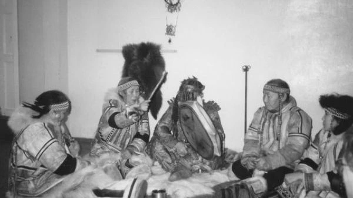
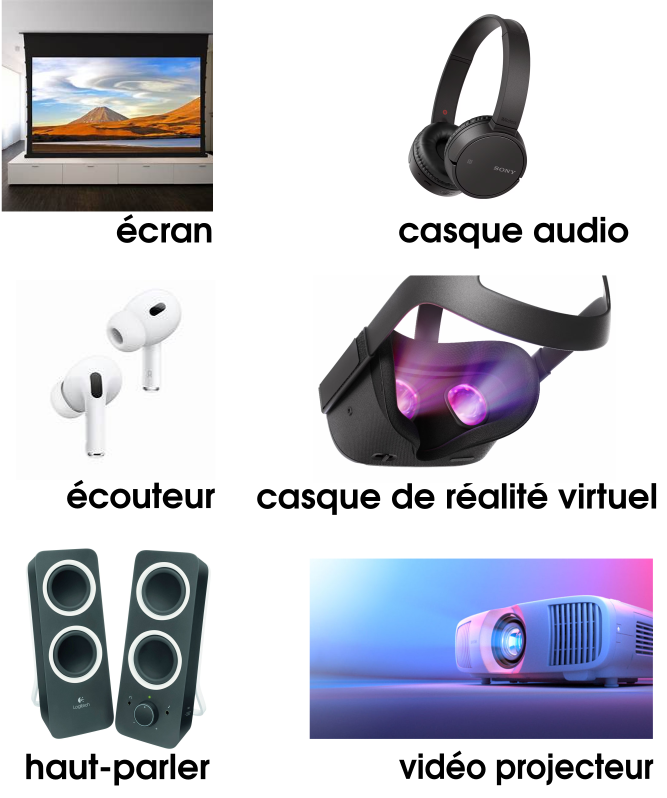
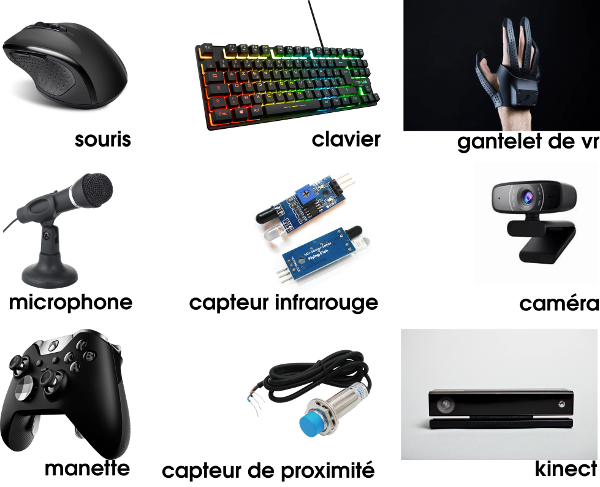
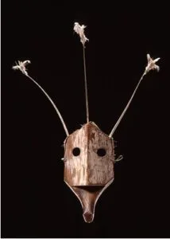
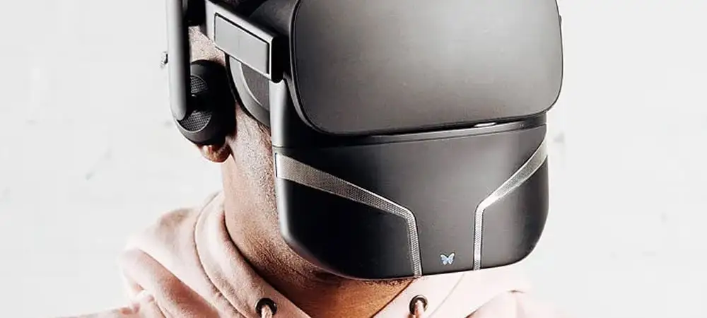
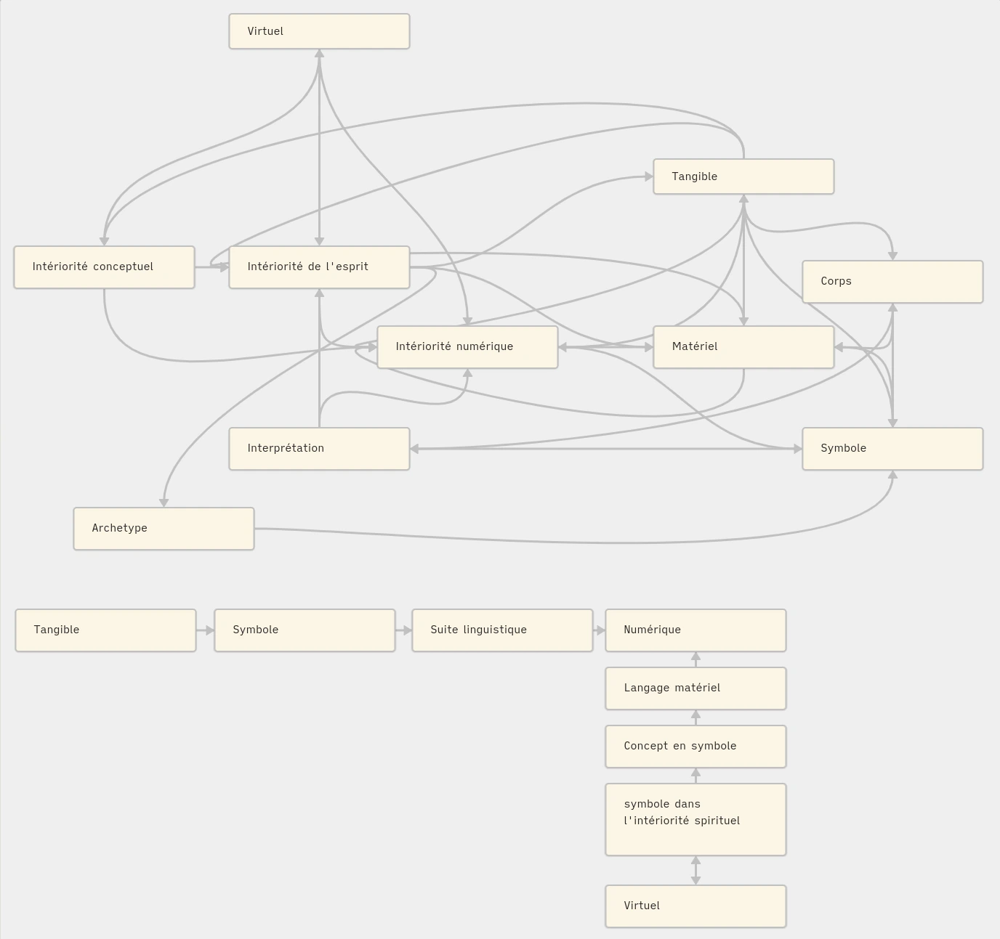

mémoire théorique sur la relation Numérique Animisme
LECURIEUX- LAFFERRONNAY Gabriel
ANIMA AETHER ES COPIA
Nous n'avons souvent aucune idée de l'impact de nos simples actions
sur les autres, à travers ce lien invisible qui nous unit. Il ne s'agit
jamais de question de « masse critique », dans ce monde hyperconnecté,
mais plutôt de connections critiques.
Grace Lee Boggs
Toute technologie suffisamment avancée est indiscernable de la magie.
Arthur C. Clarke
Toute technologie suffisamment avancée est indiscernable de la nature.
Karl Schroeder
Préambule
Dans le cadre de cet exercice d'écriture,
j'ai voulu signifier et faire se rejoindre deux rapports au monde différents, semblant avoir de fortes disparités de par leurs classifications et applications différentes.
Animisme et numérique sont pour moi la représentation de deux choses, le spirituel et la machine, qui sont deux univers différents mais importants pour ma réflexion, ainsi que pour ma pratique artistique.
C'est pourquoi j'ai voulu axer ce mémoire sur une approche théorique, pour tenter d'appréhender et de conscientiser une relation que je perçois entre ces deux genres, relation que j'ai toujours eu du mal à caractériser et donc à traduire avec profondeur dans mes productions créatives.
L'enjeu pour moi était aussi de parvenir à reconsidérer des dichotomies et des clivages pouvant être ressentis entre ces deux domaines et perçus comme imperméables sémantiquement.
Il s'agissait alors de tenter une écriture active en termes de réflexion pouvant me permettre non seulement de restituer des informations factuelles et scientifiques sur les sujets que j'aborde, mais aussi de pouvoir en décliner des raisonnements sur le caractère abstrait de ces entités, mettant en relation différentes images de ce que nous appelons la réalité, tangible et factuelle.
Il s'agit ainsi d'un écrit fondé sur mes quelques connaissances de l’anthropologie, de la phénoménologie et de la cybernétique.
Remerciement
Mes remerciements à tous mes professeurs, et particulièrement à David Olivier Lartigot, qui m'a suivi au cours de mes recherches en tant que directeur de mémoire et a sû m'aider là où je n'arrivais pas à m'éclairé.
Et à tous les autres professeurs de la mention Création numérique de l'École supérieure d'art et design de Saint-Étienne que j'ai pu consulter pour mon avancée :
Damien Bais, Jérémie Nuel et François Brument.
Une pensée particulière et un remerciement à ma mère, qui m'a transmis son intérêt pour l'immatériel, sans lequel tout cela n'aurait pas été possible.
Ainsi qu'à tous les écrivains, philosophes, anthropologues, chercheurs et théoriciens dont j'ai pu m'inspirer et me nourrir au cours de mes recherches.
Et un dernier remerciement d'avance pour les membres du jury ayant accepté de consacrer du temps à nos écritures.
En moins d’un siècle,
la culture occidentale et le monde entier ont vu l’émergence massive
des systèmes numériques qui ont transformé profondément notre société,
nos usages et même nos synapses.
L’introduction du virtuel comme espace d’expérimentation redéfinit notre perception des réalités matérielles et immatérielles,
opérant un glissement dans notre rapport au monde.
Cette évolution reflète une volonté humaine orientée vers la fusion, l’augmentation et l’hybridation de l’humain avec son environnement.
Cet environnement, artificiel par nature, s’enrichit des outils numériques que nous concevons, peuplant ainsi cette artificialité de systèmes qui nous reflètent.
Après avoir opposé nature et culture, la pensée occidentale a évolué grâce à l’analogisme et au naturalisme, qui ont rendu possible le numérique en s’inspirant du vivant.
Cette inspiration, parfois inconsciente, traduit cependant un retrait par rapport à ce que nous appelons nature, marquant une distance symbolique entre l’humanité et son origine.
En nous appuyant sur notre propre fonctionnement, sur notre raison, mais aussi sur l’observation des organismes et des dynamiques du vivant, nous cherchons à comprendre les mécanismes de construction et d’interaction dans le monde.
Cette quête met en lumière les correspondances qui existent entre les entités et révèle des logiques qui structurent le réel.
Pourtant, l’affirmation que l'humain serait le seul être doté d’intériorité demeure un biais central de cette démarche.
Dans ce cadre, nous avons conçu des entités capables de dialoguer avec nous à travers des langages façonnés par nos cultures.
Ces langages permettent de calculer, simuler, imaginer et représenter, mais aussi de transformer
et de restituer des savoirs invisibles présents dans les choses du monde.
Ces savoirs, en retour, transforment notre corporalité, nous alignant avec nos créations et révélations.
Ils posent la question de savoir si le vivant tout entier, et pas seulement l’Homme, pourrait recevoir la parole, suggérant que l’intériorité n’est peut-être pas une exclusivité humaine.
Ces dynamiques s’inscrivent dans une condition où, information et pensée émergent du perceptible, qu’il soit tangible ou intangible.
Cette construction, fondée sur une pensée analytique et mathématique, coexiste avec des traditions spirituelles en retrait, présentes depuis l’aube de l’humanité.
Ces traditions, basées sur l’interconnexion entre toutes les choses existantes, incluent des pratiques où chaque entité,
qu’elle relève ou non de ce que nous nommons nature, participe à un dialogue universel.
Ces systèmes de croyance, que l’Occident nomme animisme, considèrent les objets comme porteurs d’une intériorité et perçoivent les entités comme des "personnes non humaines" dotées de langages propres.
Ces langages, rendus audibles par un travail de l’esprit et des rituels spécifiques, permettent d’interagir avec le monde en reconnaissant une continuité entre les formes de vie.
Le langage des esprits ou des âmes, attribué à des entités non humaines, défie la différenciation et affirme que tout est vivant.
Cette perspective repose sur l’attention et l’effacement des hiérarchies, considérant que l’humain n’est pas distinct du reste du vivant.
Pourtant, la perception humaine, influencée par le contexte social et les formes corporelles,
tend à privilégier ce qui nous ressemble, alimentant ainsi une hiérarchie culturelle qui marginalise le reste du vivant.
Ce biais, que l’on pourrait qualifier d’ethnocentrisme biologique, reflète une rupture avec des pratiques spirituelles plus anciennes qui rétablissent l’équilibre entre l’humain et son environnement.
Ces traditions suggèrent une discontinuité entre les formes corporelles et une unité entre toutes les manifestations du vivant.
Elles traduisent une vision du monde où la matérialité n’est qu’une facette d’un réseau informationnel complexe reliant tout ce qui existe.
Ces idées, bien que discrètes dans le paysage contemporain, résonnent avec la symbolique numérique,
où machines et codes participent également à un dialogue sur notre rapport au monde.
Malgré un fossé apparent entre numérique et animisme, ces deux pratiques partagent des similitudes.
Le numérique, en s’appuyant sur les sciences naturaliste, descend indirectement de l’animisme,
reproduisant des mécanismes de connexion et de communication symbolique.
Les deux approches interrogent notre rapport au corps, à l’esprit et à la signification des choses.
Elles traduisent, chacune à leur manière, un biais profondément humain :
celui de chercher des liens, des symboles et des significations pour interagir avec l’environnement.
L’objectif de cette exploration est de mettre en lumière ces proximités et de comprendre comment ces pratiques façonnent notre perception du monde.
Cela implique de revisiter nos distinctions entre vivant et artifice, nature et technologie,
en adoptant une perspective où tangible et virtuel coexistent dans un même espace de sens.
Si cette démarche ne prétend pas épuiser le sujet, elle vise à approfondir notre compréhension des interactions entre ces deux univers tentaculaires, en vue de réconcilier l’humain avec la nature et ses créations les plus avancées.
Ainsi, l’enjeu sera de dépasser les dichotomies traditionnelles pour explorer une vision unifiée de notre rapport au monde.
Problématique:
Comment le numérique, en tant qu'outil technologique et la pratique spirituelle animiste,
basé sur l'expérience et les relations entre l'homme et sont environnement,
se rejoignent-ils malgré leurs cas d'études distincts ?
I.Définition et contexte
1.Définition contextuel
Dans cette partie de définition,
Nous approfondirons les connaissances et les interprétations sémantiques des pratiques de l'ontologie et de la culture abordées en les analysant selon différents axes.
Animisme
L'animisme est une ontologie manifestée dans différentes cultures.
Cette ontologie repose sur un principe fondamental :
Toutes les choses existantes sont liées par l'intérieur.
Elles sont liées par la nature similaire de leurs intérieurs.
Elle met aussi en avant l'existence d'entités hors de la matière,
d'esprit de la "nature", ainsi que des génies protecteur.
Référence:https://fr.wikipedia.org/wiki/Animisme
Comme le dit Graham Harvey dans _Rethinking Relations and Animism: Personhood and Materiality_ (édité par Miguel Astor-Aguilera et Graham Harvey),
dans cette citation :
citation:
"The attribution by humans to nonhumans of an interiority identical to one’s own"
Astor-Aguilera & Harvey, 2018, p. 32
traduction:
"L’attribution par les humains aux non-humains d’une intériorité identique à la leur."
Astor-Aguilera & Harvey, 2018, p. 32
Cette connexion interne confère une forme de matérialité similaire et commune à toutes les intériorités des êtres.
Tout intérieur est dans la continuité d'un autre, l'autre étant ici défini comme le fait de ne pas avoir le même corps.
Mais une relation différente est établie en ce qui concerne le contenant, la matière, le corps de l'espace tangible, qui sont aussi des manifestations de cet esprit intrinsèque à tout ce qui existe selon l'approche animiste.
Cependant, cette matérialité tangible est soumise à une dissociation, une discontinuité des corps entre les différentes corporéités habitées par une entité immatérielle dont elles sont l'expression.
video: conférence et interview de Philippe Descola
Cette connexion interne confère une forme de matérialité similaire et commune à toutes les intériorités des êtres.
Grâce à la discontinuité des corps, chaque chose incarnée a un rôle ayant son propre poids dans l’équilibre de l’écosystème.
L'animisme ne se réduit pas à une croyance, mais se manifeste par des actions incarnant un rapport symbolique et expérientiel avec les esprits.
citation:
"Animist relationality is both theory and practice, and intersubjectivity sits at its core.
It is based on relationships, performances, and the moment, all of which is volatile, inclusive, and engaged"
Astor-Aguilera & Harvey, 2018, pp. 99–100
traduction:
"La relationalité animiste est à la fois une théorie et une pratique, et l'intersubjectivité en est le cœur.
Elle repose sur des relations, des performances et l’instant, qui sont tous volatils, inclusifs et engagés."
Astor-Aguilera & Harvey, 2018, pp. 99–100
Cette ontologie établit un rapport profond avec tout ce qui existe, soulignant leur interdépendance.
Elle place l'homme sur un pied d'égalité avec les autres êtres et les systèmes naturels auxquels il appartient,
en créant une cohérence avec son écosystème et ceux qui le composent.
Ce qui provoque un rapport horizontal entre l'humain, les éléments qui le contiennent (l'environnement) et "les choses du monde", qui ne sont alors pas réduites à une simple utilité pour l'humain, comme ressource.
Puisque l'humain y est une incarnation matérielle tout comme ce qui l'entoure.
Ces cultures s'ancrent dans l'écoute et un dialogue maintenant l’équilibre,
la stabilité de ce qui participe au réel, à la possibilité d’être, au vivant incarné.
Cet ancrage n'est pas sans rappeler le "care".
citation:
"Animism is a 'relational epistemology . . . a way of understanding relatedness from a related point of view within the shifting horizons of the related viewer'"
Astor-Aguilera & Harvey, 2018, p. 23
traduction:
"L'animisme est une 'épistémologie relationnelle... une façon de comprendre les relations depuis un point de vue relationnel
au sein des horizons changeants de l'observateur concerné.'"
Astor-Aguilera & Harvey, 2018, p. 23
Et, par conséquent, ne se situe pas dans un rapport purement pratique et utilitaire aux choses.
Il en résulte un acte de partage avec tout ce qui sert le monde.
citation:
"'All our relations' structures ceremonies in which people seek the well-being of others.
It has become. It is not rooted in the fantasy of human superiority but in the recognition of the necessity of mutual aid between all co-dwellers"
Astor-Aguilera & Harvey, 2018, p. 65
traduction:
"'Toutes nos relations' structurent des cérémonies dans lesquelles les gens recherchent le bien-être des autres.
Ce n'est pas enraciné dans le fantasme de la supériorité humaine, mais dans la reconnaissance de la nécessité de l'entraide entre tous les cohabitants."
Astor-Aguilera & Harvey, 2018, p. 65
Sa composition est un ensemble de pratiques qui se tournent vers l'action de communiquer, d'échanger, de céder et/ou d'incarner les savoirs, l'information engendrée par la posture engagée par d'autres corporalités.
citation:
"Dans la mesure où la catégorie des ‘personnes’ englobe des esprits, des plantes et des animaux, tous dotés d’une âme,
cette cosmologie ne discrimine pas entre les humains et les non-humains ; elle introduit seulement une échelle d’ordre selon les niveaux d’échange d’information réputés faisables"
Descola, 2005, p. 29
C'est ce qui engage le fait que tout est la suite de tout, permettant une lecture bien différente de la vie et du vivant.
Non seulement parce que tout y est considéré comme porteur de vie, mais aussi parce que la mort ou la fin d'un corps n'est pas perçue comme une fin, mais plutôt comme l'arrêt d'une manifestation matérielle.
Cela rompt simplement un lien avec le cadre tangible, factuel et matériel dans lequel cet esprit existait dans la réalité qui l'accueillait.
Cela peut permettre à ce qui meurt de devenir une nouvelle expression et d'avoir un autre rôle dans l'équilibre. La mort devient alors une transcendance.
Les premieres trace de l'animisme pourrait remonter à l'apparition des premières architectures dites non pratique avec une dimension symbolique.
Actant l'humain comme un individu pleinement social, puisqu'il considère que tout ce qui l'entoure entretient des rapports sociaux avec lui et sont des êtres sociaux. De ce fait, découle des rapports symboliques.
Cette symbolique est considérée comme la projection de concepts intérieurs impactant l'environnement matériel ou tangible.
À partir duquel ces concepts sont projetés, par le biais de symboles, ils deviennent actuels et concrets.
Ce rapport symbolique constitue un pont entre le tangible et le monde spirituel et psychique, permettant de faire le lien avec le plan fondamental de l'esprit.
Ce plan représente ce qui est inhérent à la conception de l'esprit, de l'âme, de la conscience et de l'intentionnalité.
citation:
"Par le terme vague d’« intériorité »,
il faut entendre une gamme de propriétés reconnues par tous les humains et recouvrant en partie ce que nous appelons d’ordinaire l’esprit,
l’âme ou la conscience — intentionnalité, subjectivité, réflexivité, affects, aptitude à signifier ou à rêver.
On peut aussi y inclure les principes immatériels supposés causer l’animation, tels le souffle ou l’énergie vitale,
en même temps que des notions plus abstraites encore comme l’idée que je partage avec autrui une même essence,
un même principe d’action ou une même origine, parfois objectivés dans un nom ou une épithète qui nous sont communs.
Il s’agit, en somme, de cette croyance universelle qu’il existe des caractéristiques internes à l’être ou prenant en lui sa source,
décelables dans les circonstances normales par leurs seuls effets,
et qui sont réputées responsables de son identité, de sa perpétuation et de certains de ses comportements typiques.
Par contraste, la physicalité concerne la forme extérieure, la substance, les processus physiologiques, perceptifs et sensori-moteurs,
voire le tempérament ou la façon d’agir dans le monde en tant qu’ils manifesteraient l’influence exercée sur les conduites ou les habitus par des humeurs corporelles,
des régimes alimentaires, des traits anatomiques ou un mode de reproduction particuliers.
La physicalité n’est donc pas la simple matérialité des corps organiques ou abiotiques,
c’est l’ensemble des expressions visibles et tangibles que prennent les dispositions propres à une entité quelconque lorsque celles-ci
sont réputées résulter des caractéristiques morphologiques et physiologiques intrinsèques à cette entité"
Descola, 2005, p. 211
L'animisme s'ancre dans une matérialisation de relations transcendantales entre des entités, rendue possible par la formation de dialogues.
Numérique
Numérique dérivé de numéro, ( du latin numerus, désignant le mot nombre).
Caractérise se qui se réfère aux nombres, aux chiffres et désigne des longueurs tantôt matériel tantôt linguistique.
Permettant le calcule et la mise en place d'outils dit numérique qui se voit en opposition avec les principes analogique.
Cela désigne aussi un grand groupe de pratique diverse relié par l'usage de ces séries d'outils.
Le numérique désigne un ensemble de rapports à la matérialité, à la virtualité, à la dématérialisation et à la simulation.
C'est un domaine qui englobe des pratiques dérivées et permises par des langages logiques, fonctionnant sur la base de symboles.
Ces symboles permettent d’ériger des technologies.
Le numérique intègre donc un ensemble de langages, allant de bas niveau à haut niveau, tirés du binaire.
Ces langages permettent d'interpréter, de traiter ou de restituer des informations tout en assurant le maintien du fonctionnement des machines.
Les premières itérations de ce type de système linguistique logique, à la base de ces écosystèmes machiniques, datent de 1689 et viennent du philosophe et mathématicien allemand Gottfried Leibniz.
Il fut le premier à concevoir le système d'expression binaire tel que nous le connaissons, pour représenter des opérations par un système d'ouverture et de fermeture, utilisé comme langage de condition.
Il s'agit d'un langage qui pointe l'absence et la présence, se caractérisant par des chaînes de caractères composées de 0 et de 1, permettant de calculer et d'encoder des données.
reférence: https://fr.wikipedia.org/wiki/Code_binaire
Leibniz utilisa cette base pour réduire la logique à des propositions simples.
Pour lui, cela relevait d'une quête métaphysique, liée à la croyance religieuse catholique du _creatio ex nihilo_ (création à partir de rien).
Référence: Creatio_ex_nihilo
Cette innovation permit par la suite la construction de différentes machines, telles que :
- La machine analytique de Charles Babbage (1834)
- La machine de Turing (1936)
- L’ENIAC (1946)
- Le Zuse Z3 (1941)
- Les transistors (1950-1960)
- Les circuits intégrés (1958)
- Les microprocesseurs commerciaux (1971)
- Internet (entre 1990 et 2000)
- L’informatique mobile (à partir des années 2000)
jusqu’à aujourd’hui.
Référence:
- https://archinfo01.hypotheses.org/770
- https://fr.wikipedia.org/wiki/Informatique
- https://www.superprof.fr/blog/la-bible-des-informaticiens/
Le numérique s'ancre dans une recherche d’artefacts initialement utilitaires, liés à son aspect industriel,
mais pouvant néanmoins être libérés de leur caractère purement utilitaire ou de leur rapport initial à l’optimisation.
Ainsi, nous porterons notre intérêt sur ses accointances avec le caractère symbolique, créatif et relationnel que permettent ces technologies.
Nous approfondirons notre réflexion sur ces aspects de mutualisation des informations en réseau,
leurs relations avec la simulation par l'incarnation et la manifestation, ainsi que sur le rôle symbolique que l’humain attribue aux machines équipées de systèmes numériques.
Nous établirons des rapprochements entre les pratiques animistes, probablement présentes dès le Paléolithique comme l’avance Jean Clottes dans _Des Chamanes de la préhistoire_, et les pratiques numériques, qui représentent les expressions humaines les plus récentes.
Référence: https://fr.wikipedia.org/wiki/Jean_Clottes
Cela nous invite également à considérer le principe d’individuation porté par Simondon, qui stipule que l’individu ne peut être compris indépendamment du processus par lequel il se forme.
Référence:
- https://journals.openedition.org/quaderni/2224
- https://en.wikipedia.org/wiki/Individuation
Ce croisement pourrait nous renseigner plus profondément sur les liens entre les pratiques animistes, qui relèvent d’un héritage ancestral, et les moyens récents d’exprimer notre rapport au monde.
2. élément - Animiste
Dans cette partie, nous viendrons tenter de décortiquer des usages et et des pratiques animistes.
Dans le but d'isoler, et d'interpréter les points essentiels.
Et pour mieux percevoir les actions et les appréhensions que nous entretenons à l'égard des pratiques de l'animiste pour cibler des points de concordances avec le numérique.
Rapport à la définition de personnalité et les individus peuplant l'espace
Dans l'ontologie animiste, comme le décrit Graham Harvey dans son ouvrage Rethinking Relations and Animism, avec l'exemple des communautés Ojibwe d'Amérique du Nord, qui rejettent les dualismes cartésiens tels que "sujet et objet", "nature et culture" ou encore "pensée/esprit et matière".
Ces dualismes cartésiens : "sujet et objet", "nature et culture", et "esprit/mental et matière" ne sont pas reconnus dans l'ontologie animiste.
Ainsi, aucun caractère catégoriquement objectif ou neutre n'est attribué aux éléments peuplant l'espace entourant les individus.
citation:
"Les chasseurs-cueilleurs conçoivent leur milieu non pas comme un lieu neutre et passif de subsistance, mais comme une entité, une sorte de parent qui veillerait à nourrir ses enfants sans retour ni échange explicite"
Descola, 2005
Dans cette perspective, ces éléments sont considérés comme des personnes à part entière, ayant un rôle agent, et parfois étant en état d'expression latente.
Ce statut de "vivant" peut leur être attribué après un certain temps d'existence matérielle, comme en témoigne l'animisme japonais (Shintoïsme), qui mêle animisme et bouddhisme avec le concept de Tsukumogami.
Ce dernier désigne des objets qui acquièrent une âme après avoir atteint un âge avancé.
Référence:
- Shintoïsme et Tsukumogami
- Shintoïsme et Bouddhisme au Japon
- Tsukumogami sur Wikipédia
Ainsi, ces éléments ne manifestent pas nécessairement leur "vie" de manière continue.
Leur statut de "vivant" est conditionné par des événements spécifiques dans l'environnement, comme une interaction avec la foudre ou une interaction particulière avec un humain ou un autre individu de cet environnement.
citation:
"If not all stones are alive 'but some are,' how does someone encountering a stone tell the difference?
It certainly makes a difference, not only grammatically and in other speech acts,
but also in the way a stone is treated. People are spoken with and acted towards differently than objects"
Astor-Aguilera & Harvey, 2018
traduction:
"Si toutes les pierres ne sont pas vivantes, mais que certaines le sont, comment quelqu’un qui rencontre une pierre fait-il la différence ?
Cela change certainement quelque chose, non seulement grammaticalement et dans d’autres actes de langage,
mais aussi dans la façon dont une pierre est traitée. On parle et on agit envers les personnes différemment qu’envers les objets."
Astor-Aguilera & Harvey, 2018
Ce passage exprime que, dans ces cultures animistes,
l’espace est peuplé de "personnes" humaines et non humaines.
Ces "personnes" possèdent un caractère de personnalité, une manifestation singulière, incarnant leurs rapports avec le lieu et les éléments ayant une matérialité.
Ces "personnes" sont toujours conditionnées dans un lieu donné, par leurs positions, formes et interactions avec les autres individus.
citation:
"Agency is evinced in the ability of persons to (actively) orient themselves or to align themselves with particular relationships"
Strathern, 1999, as cited in Astor-Aguilera & Harvey, 2018
traduction:
"L’agentivité se manifeste dans la capacité des personnes à s’orienter (activement) ou à s’aligner sur des relations particulières."
Strathern, 1999, as cited in Astor-Aguilera & Harvey, 2018
Ainsi, cette pensée nous pousse à considérer ces éléments comme des agents ayant un rôle pertinent dans l'espace et dans l’accomplissement de ce rôle.
citation:
"On doit plutôt considérer ces substances corporelles abritant les âmes comme des hypostases, moyens commodes de donner une expression concrète à des agents,
des essences et des causes dont l’existence est habituellement inférée à partir des seuls effets qu’on leur impute"
Descola, 2005
Tous ces éléments sont reliés à une symbolique et à une matérialité tangible, servant de manifestation concrète de l'esprit.
citation:
"Human beings are always in exchanges with a world that is a manifestation of spirit. Breathing, eating, drinking are ways that human beings are in regular ongoing exchanges with the world"
Harvey, 2018
traduction:
"Les êtres humains sont toujours en échange avec un monde qui est une manifestation de l'esprit.
Respirer, manger, boire sont des moyens par lesquels les êtres humains sont en échanges réguliers et continus avec le monde."
Harvey, 2018
L'animisme reconnaît que l’espace est une manifestation de l'esprit et que les êtres humains sont toujours en interaction avec ce monde, que ce soit par la respiration, la nourriture, ou d'autres pratiques quotidiennes.
Le monde, en tant que manifestation, est donc une matérialité tangible qui établit un lien intérieur et interpersonnel.
Ce lien s’exprime de manière différenciée par cette même corporalité, en interaction avec l'environnement.
Incarnation
L'incarnation désigne le concept d’être incarné, c'est-à-dire d’être "mis en chair", d’être "entre la chair".
Cela fait référence à la manière dont l’essence de l’être se positionne dans des couches du réel tangible, matérielles, sous-entendant que nous ne sommes pas simplement le corps, mais que nous sommes en lui.
citation:
"The sudden irruption of the sacred in the profane world, sacred time opening to the transcendent, resulting in radical discontinuities"
Eliade, 1964
traduction:
"L’irruption soudaine du sacré dans le monde profane, le temps sacré s’ouvrant au transcendant, entraînant des discontinuités radicales."
Eliade, 1964
L’incarnation permet à cette essence, à l’âme, d’être dans un espace tangible, à la fois subjectif et objectif, et d’expérimenter cet espace.
Il est possible de concevoir que l’incarnation manifeste des informations par sa chair, une chair qui est elle-même une manifestation et un symbole de la matérialité.
Par l'incarnation, il devient possible pour des entités initialement immatérielles de partager des informations sur leur subjectivité relative au corps habité, avec différents types d'individus sur un plan matériel.
Il en résulte de ne pas maintenir son attention sur le fait que l'entité sujet est un être uniquement matériel,
mais plutôt qu'il peut être doté d'une intériorité, par la simple volonté de vouloir considérer celle-ci et d'établir un dialogue. (1)
citation:
"Les existants dotés d’une intériorité analogue à celle des humains sont tous des sujets, animés par une volonté propre et pourvus,
selon leur position dans l’économie des échanges d’énergie et les dispositions physiques dont ils jouissent,
d’un point de vue sur le monde qui caractérise ce qu’il leur est permis d’accomplir,
de connaître et d’anticiper"
Descola, 2005, p. 483
Ce rapport offre le respect par la prise en compte des symboles portés par le corps, et qui expriment l'esprit.
Puisque, étant doté d'un corps, d'une matérialité à notre instar, rien n’empêche que le reste des êtres soit aussi doté d'un esprit et d’une âme.
citation:
"Le symbolique n'est ni un concept, ni une instance ou une catégorie, ni une 'structure', mais un acte d'échange et un rapport social qui met fin au réel,
qui résout le réel, et du même coup l'opposition entre le réel et l'imaginaire"
Baudrillard, 1976, p. 218
Dans cette logique, la corporalité est une composante de l'incarnation qui est un sanctuaire de symboles.
Elle accueille l’être, faisant exister la considération d'un phénomène d'esprit comme un symbole dans la matière.
Mais faire état de l'incarnation, d’un être n’étant pas seulement de matière, n'est faisable qu'à condition que l’individu recevant ces informations accepte de créer une relation avec l'autre individu en question,
en le considérant comme étant lui-même un symbole d'incarnation enclin au dialogue.
citation:
"Something becomes material because it makes a difference, because somehow or other it is detectable. It depends, then, on a relation between that which is detected and that which does the detecting.
Matter that does not make a difference does not matter. It is not matter since there is no relation. Nor relation of difference and detection. No relation at all"
Astor-Aguilera & Harvey, 2018, p. 102
traduction:
"Quelque chose devient matériel parce qu’il fait une différence, parce qu’une manière ou une autre, il est détectable.
Cela dépend alors d’une relation entre ce qui est détecté et ce qui détecte.
Une matière qui ne fait pas de différence n’a pas d’importance.
Ce n’est pas une matière puisqu’il n’y a pas de relation. Ni relation de différence et de détection. Aucune relation tout court."
Astor-Aguilera & Harvey, 2018, p. 102
À ce moment, l'acceptation de ce symbole d'incarnation comme un élément de langage rompt la latence, et met fin à la virtualité du dialogue en le rendant tangible. Si l’on suit cette logique de Jean Baudrillard, le symbole incarne lui-même la réalité et la tangibilité d’une information immatérielle, en la rendant matérielle.
citation:
"The shaman can do today in ecstasy what could, at the dawn of time, be done by all human beings in concreto; they went up to heaven and came down again without recourse to trance.
Temporarily and for a limited number of persons—the shamans—ecstasy re-establishes the primordial condition of all mankind.
In this respect, the mystical experience of the 'primitives' is a return to origins, a reversion to the mystical age of the lost paradise.
For the shaman in ecstasy, the bridge or the tree, the vine, the cord, and so on—which, in illo tempore, connected earth with heaven—once again, for the space of an instant, becomes a present reality"
Eliade, 1964, p. 520
traduction:
"Le chaman peut aujourd’hui, en état d’extase, accomplir ce que tous les êtres humains pouvaient faire à l’aube des temps de manière concrète ;
ils montaient au ciel et redescendaient sans recourir à la transe.
Temporairement et pour un nombre limité de personnes — les chamans — l’extase rétablit la condition primordiale de toute l’humanité.
À cet égard, l’expérience mystique des 'primitifs' est un retour aux origines, une régression à l’âge mystique du paradis perdu.
Pour le chaman en extase, le pont ou l’arbre, la vigne, la corde, etc. — qui, à l’époque ancienne, reliaient la terre au ciel —
redeviennent, le temps d’un instant, une réalité présente."
Eliade, 1964, p. 520
Dans cette suite, l'incarnation est la concrétisation d'une interaction avec l'autre. Manifester sa présence,
c'est reconnaître l'incarnation de/par l'autre en interagissant avec lui et en interprétant ces expressions subtiles, qui sont elles aussi permises par la matérialité et restituent le contenu d'une intériorité.
Considérer l'incarnation d'un autre, c'est aussi la tentative de faire la traduction.
Il s'agit, en mon sens, de la première forme d’interaction symbolique.
citation:
"Les cosmologies animiques pullulent de personnes nettement individualisées et identifiables sans peine sous la diversité de leurs atours :
c’est tel animal qui me toise, tel grand arbre qui est venu me parler en rêve, tel humain lointain que je reçois en visite"
Descola, 2005, p. 510
Ces réflexions nous conduisent à interroger la nature de l'interaction, notamment celle entre l'humain et le non-humain, dans le cadre des principes animistes.
Il s'agit également de comprendre ce que cet échange implique pour la compréhension et l'application des préceptes animistes, ainsi que leur déploiement dans le contexte des manifestations de ces principes.
Interaction Humain, Non-Humain et le Langage Employé
L’interaction est, par définition, la relation interpersonnelle entre deux individus au minimum.
citation:
"La relation n’est donc pas entendue ici dans un sens logique ou mathématique,
c’est-à-dire comme une opération intellectuelle permettant la liaison interne entre deux contenus de pensée,
mais comme ces rapports externes entre des êtres et des choses repérables dans des comportements typiques et susceptibles de recevoir une traduction partielle dans des normes sociales concrètes"
Descola, 2005, p. 206
C'est une relation dans laquelle les comportements de ces individus s'influencent mutuellement et se modifient chacun en conséquence de l'autre.
L'approche interactive avec des êtres différents de l'humain, de façon consciente et provoquée, est un acte animiste.
citation:
"Des sociétés animiques montrent sans équivoque que ces relations polyvalentes sont systématiquement formulées dans le langage des rapports institués entre humains, non dans celui des rapports entre non-humains.
En Amazonie, en Amérique subarctique, en Sibérie septentrionale, les liens qui unissent entre eux les animaux ou les esprits,
et ceux-ci aux hommes, sont toujours qualifiés par un vocabulaire tiré du registre de la sociabilité entre humains :
l’amitié, l’alliance de mariage, l’autorité des aînés sur les cadets, l’adoption, la rivalité entre tribus, la déférence vis-à-vis des anciens"
Descola, 2005, p. 431
Dans l'ontologie animiste et ses manifestations pratiques, l'interaction se manifeste de différentes manières, significatives de la culture qui les porte.
Dans le livre _Respecting the Living World_ de Graham Harvey, sont cités différents peuples et leurs traditions respectives qui convergent sur certains rapports au dialogue avec des entités non humaines.
Mais celles-ci divergent dans la conceptualisation d'une possible présence dans un être matériel, dans le fait qu'un être spirituel soit incarné dans un sujet matériel.
Exemples : Les peuples Ojibwe, Nayaka, Chewong, Maori, et Japonais (non cité dans l'ouvrage).
Référence Japon :Tsukumogami : des objets bien agités
Les repères qui déterminent la possibilité d'établir un dialogue avec des entités varient en fonction de la temporalité du principe d'incarnation ou d'habitation pensée par ces cultures :
Habitation perpétuelle :
Le dialogue est permis par la simple présence de l'individu dans leur environnement.
C'est-à-dire que la propriété d'être habité et de pouvoir dialoguer est intrinsèque à la nature de cette entité. La propriété d’être habité fait partie de l'essence même de leur existence, du fait qu'ils sont présents et qu'ils apparaissent à la conscience dans un milieu donné.
Ils existent, alors ce sont des personnes.
Habitation latente :
D’autres perçoivent différents prérequis pour considérer une quelconque habitation du corps, permettant ainsi que l'individu soit une personne.
Dans ce cas, le dialogue ne peut être établi qu'au moment d'une interaction particulière avec l'entité matérielle, qui devient alors virtuellement une personne à un instant donné.
Ainsi, ces entités ne sont des personnes que pour un temps donné, ou à partir d'un moment précis, ce qui leur permet de faire l'objet d'une interaction particulière avec l'humain.
Prenons l'exemple d'une pierre citée dans le livre Rethinking relations and animism personhood and Materiality de Miguel Astor-Aguilera et Graham Harvey: p. 44
Une pierre est virtuellement "habité", mais ne l'est pas en tout point de son existence. Le dialoguer est donc virtuellement probable.
La concrétisation de cette possibilité ne peut se faire que par un symbole d'altérité, comme par exemple si elle est frappée par la foudre en étant au pied d'un arbre.
Ainsi, la pierre serait alors en mesure de dialoguer, activée par un événement ou une interaction singulière. Elle incarnerait un esprit de la "nature" qui se serait logé en elle.
Mais d’autres considérations convergent :
Ces pratiques et conceptions se situent dans le rapport au virtuel que présente l’existence de ces sujets.
Ces entités peuvent actualiser un dialogue avec des êtres humains et non-humains, en fonction d’une posture qui actualise le dialogue.
Bien que leurs états d’activité puissent être considérés comme constants ou variables.
En ce sens, on peut considérer que tout ce qui existe dans le prisme de cette ontologie est virtuellement actif et communicant.
citation:
"Un système de relation n’est jamais indépendant des termes qu’il unit si l’on entend par 'termes' des entités dotées ab initio de propriétés spécifiques qui les rendent aptes ou inaptes à nouer entre elles des liens,
et non pas des individus interchangeables ou des unités sociales constituées"
Descola, 2005, p. 225
Les individus sont les images de dialogue existant de façon omniprésente, mais parfois latente. Ces dialogues peuvent être concrets ou actuels, avec un potentiel suggestif et une importance non relative lorsqu’ils s’ancrent dans une interaction symbolique.
citation:
"Agency is evinced in the ability of persons to (actively) orient themselves or to align themselves with particular relationships"
Strathern, 1999, pp. 14–15, as cited in Astor-Aguilera & Harvey, 2018, p. 206
traduction:
"L’agentivité se manifeste dans la capacité des personnes à s’orienter (activement) ou à s’aligner sur des relations particulières."
Strathern, 1999, as cited in Astor-Aguilera & Harvey, 2018
Cette approche nous amène à questionner la personnification intrinsèque à la vision animiste, et à réfléchir sur ce qu'elle engage dans les interactions humaines et non-humaines.
Notre prochain questionnement portera donc sur ce que cette personnification intrinsèque à la vision animiste implique pour le rapport au monde et aux autres.
-Personnification-
La personnification, d'un point de vue stylistique et littéraire, signifie le fait de prêter une vie personnelle, un caractère, une présence, une personnalité à des entités définies dans la culture comme étant vides ou privées de ces mêmes personnalités.
Référence: https://www.alloprof.qc.ca/fr/eleves/bv/francais/la-personnification-figure-de-style-f1372
Elle désigne bien souvent une figure de style linguistique donnant des traits plus sensibles, précieux et émotifs à des entités dites "absentes de vie intérieure".
La personnification est une considération pratique dans l'animisme, qui diffère de la figure stylistique,
puisque cette personnification pratique rend la vie intérieure très concrète parce qu'elle est symbolisée.
Elle donne des traits personnels à des entités.
Ce processus permet d'introduire l'interaction et des relations fortes, profondes, entre nous et les entités semblant être privées de moyens d'expression.
Ceci permet d’éliminer des réductions, des entraves psychologiques, des conditionnements de l'esprit,
nous poussant à ne pas considérer les expressions émises par ces entités apparaissant à nos consciences.
https://fr.wikipedia.org/wiki/Personnification
citation:
"Tandis que l’animisme généralise à une multitude d’existants la position de sujet moral et épistémique,
le naturalisme les confine donc à une seule espèce et en hiérarchise clandestinement les degrés au sein de celle-ci.
En outre, à l’exception des savants et des philosophes qui, dit-on, savent s’exempter de cette condition,
la masse des sujets plus ou moins rationnels demeure enfermée le plus clair du temps dans la prison des habitudes et des préjugés ;
ces sujets diffèrent aussi les uns des autres par paquets en fonction de leurs coutumes, de leurs langues, de leurs conventions et, individuellement,
à l’intérieur de chaque culture, à raison de leur éducation, de leur milieu d’origine et de leurs talents.
Non seulement l’intersubjectivité est impossible dans le rapport aux non-humains,
mais elle se révèle fort difficile entre les humains tant varient leurs croyances, leurs valeurs et leurs institutions,
tout comme les systèmes de signes au moyen desquels on s’efforce de traduire ces constructions fugaces dans une communication toujours menacée de malentendus"
Descola, 2005, p. 495
Cela provoque une meilleure appréhension des interactions latentes et possibles entre l'espace et tout ce qu'il contient, entretient, fait exister et dialoguer.
Le simple moyen d'interpréter leur position au sein de leur environnement peut devenir un symbole.
Ces interactions basiques sont sans doute, le premier état de l'interaction humaine et non-humaine, apportant sa particularité, son âme, son équilibre au lieu, par un rapport pertinent, continu et bienveillant.
La personnification crée l'importance de leur existence, sans la négliger, dans la compréhension et le dialogue qu'elle permet avec l’environnement.
Par cette personnification, une "pierre" (ou autre entité actuellement ou virtuellement personnifiée) appartenant au monde qui nous entoure, transmet au monde des attitudes et des mémoires.
Elle est un être de transmission.
En ce sens, ces éléments deviennent,
des guides,
des conseillers,
des messagers,
des compas,
des membres d'une même communauté mêlant nos rapports humains et les leurs.
La personnification est une forme d'activation du dialogue de l'humain avec elle.
Par celle-ci, les entités non-humaines deviennent en quelque sorte des interfaces de dialogue avec les couches sensibles de l'environnement.
citation:
"Dans les collectifs animiques, les catégories sociales font simplement fonction d’étiquettes commodes permettant de caractériser une relation, indépendamment du statut ontologique des termes qu’elle met en rapport"
Descola, 2005, p. 431
L'activation est à double sens et réside dans la volonté d'une entité telle que nous, d'accepter ou non de rentrer en dialogue avec ces entités et de démontrer cette volonté par l'application d'attitudes et de pratiques, qui symbolisent cette volonté d'entrer en dialogue.
Cela permet d'inclure ceux-ci dans nos systèmes culturels, comme des personnes, des êtres d'esprit.
Par ces symboles qui concrétisent ce biais de personnification relatif à une forme de paréidolie globale, permettant cette pensée d'environnement vivant de part et d'autre.
C'est ici que se pose la question du rituel, qui se rapproche de procédés protocolaire permettant l'incarnation, de ces volontés de dialogue, par des postures qui sont engagées par cette même volonté qui donne accès au savoir par la requête codifiée.
- Pratique rituelle -
Ainsi, ces pratiques manifestent la propriété d'être en dialogue avec tout ce qui est une personne, nécessitant des dispositions particulières et un certain degré de complexité symbolique.
Référence:
- https://artsandculture.google.com/u/0/story/sgUh9scATf98Jw?hl=fr
- https://fr.wikipedia.org/wiki/Animisme
Ces éléments permettent l'alignement de la conscience sur différentes positions, ainsi que sur les divers niveaux de dialogue relatifs aux formes variées de l’être, ce qui facilite l'entrée en communication.
Ces codes, ces dispositions, ces protocoles sont appelés rituels.
Ils permettent la sauvegarde de principes culturels tout en introduisant ces dialogues sensibles, hors du tangible, mais passant par le tangible.
Il en existe une multitude dans notre sujet, dû à la diversité des communautés qui les pratiquent, aux différences dans l’interprétation des symboles, à leur géographie, mais aussi à la multiplicité des cas nécessitant leur utilisation.
Nous ancrerons ainsi notre étude de ces termes en nous basant sur les pratiques culturelles chamaniques, fondées sur l'ontologie animiste.
Celles-ci peuvent se décomposer en plusieurs pratiques et applications :
- Contact avec les ancêtres
- Consultation des êtres de la nature concernant des événements environnementaux
- Inclusion des personnes non-humaines dans les regroupements pour les décisions de la communauté
- Hommage à la nature
- Don d’objets ou de ressources à des entités spirituelles ou aux éléments de la nature
- Demande d’équilibrage de l’environnement
- Rituel d’initiation
- Repousser des présences agressives
- Rappel de l’âme
- Divination
Il en résulte différents accompagnateurs, objets et entités servant d’intermédiaires entre les mondes.
Ils permettent de se synchroniser avec les entités visées, en fonction de la définition de personnalité et des individus peuplant l'espace.
Ces éléments font office de guides à la projection et de médiums d'immersion dans ces strates de la conscience, "voilées" par la matérialité tangible.
Ce sont des artefacts d'immersion.
Certains sont portés, incarnés ou manipulés, d'autres sont simplement présents, tandis que d'autres encore sont donnés, cédés ou sacrifiés en échange de réponses à la demande initiée par celui qui émet le don.
Ces offrandes, dans le cas où des objets sont abandonnés au profit de l'entité invoquée, sont aussi appelées ex-voto et feront l'objet de notre prochaine partie.
- Artefacts de mise en relation -
Les artefacts rituels, le plus souvent utilisés par les chamans et dans d'autres cultures animistes, servent à entrer en dialogue avec des entités incarnées ou non, c'est-à-dire des esprits.
Ils permettent aux pratiquants de favoriser des états de conscience altérés.
Ces états de conscience altérés permettent ainsi de juxtaposer l'esprit des pratiquants à la dimension du réel qu'ils sollicitent, et parfois même de s'incarner dans d'autres corps par le biais de visions qui leur en donnent l'expérience.
Référence vidéo: (26 min 20)
Les artefacts utilisés sont les suivants :
- Masque
- Sceptre
- Totem
- Nourriture
- Objet ayant appartenu aux ancêtres
- Usage des éléments pour leur symbolique :
- Feu
- Eau
- Terre
- Air, par des variations de respiration
- Danse : changement des attitudes du corps, souffle, gestes
- Parure
- Tambour
- Concoction à base de plantes
- Bougie
Référence: (19 min)

photo de rituel chamanique en Sibérie ou sont porter des parrures et des tambours
Les ex-voto sont des dons, souvent des objets ou des éléments cédés à l'entité avec laquelle le dialogue est établi. Ils sont très souvent des éléments importants, voire primordiaux, pour l'initiateur de la requête.
Ils permettent de faire preuve de sincérité afin de recevoir le fruit de l’initiation du dialogue ou de remercier pour la bonne réception de la demande.
Les ex-voto nourrissent la demande et entretiennent la relation, que ce soit dans un but personnel ou dans le cadre d’une requête communautaire.
citation:
L’ex-voto est un moyen pour les croyants de communiquer avec le divin, de manifester leur foi et leur dévotion.
En ce sens, des ressources destinées à être consommées par celui ou ceux qui en font la demande peuvent être cédées.
Les ex-voto peuvent également être offerts au feu ou consister en des dons d’objets personnels, sensibles et mémoriels :
des objets ayant une personnalité affirmée et un lien fort avec leur propriétaire, souvent déposés près de totems ou d’effigies représentant, de manière matérielle, l'esprit de l'autre monde.
Comme le mentionne Graham Harvey dans le même ouvrage (p. 99),
il prend pour exemple la Vierge d’Alcalá, vraisemblablement animisée.
Sa forme matérielle, façonnée à partir de bois et d’autres matières, semble agir comme une interface permettant de se mettre en relation avec l'entité qu’elle représente.
Des objets particuliers y sont offerts par ceux qui viennent prier.
L'ex-voto repose sur un principe de rééquilibrage.
Il engage une régulation comparable à celle observée dans la nature, où les écosystèmes maintiennent un équilibre à travers des flux modulés par des pertes et des gains équivalents, permettant d’entretenir un cycle vertueux et stable. Cela instaure une continuité pérenne dans les relations entre entités.
Nous pouvons prendre l'exemple de l’homéostasie : un principe de compensation permettant à un système de demeurer équilibré.
Ainsi, l’ex-voto devient un acte symbolique régulateur qui assure que le dialogue entre demande et réception demeure stable et équitable. Ce principe est au fondement des relations durables entre deux ou plusieurs entités, assurant un lien pérenne.
Référence: https://www.futura-sciences.com/sante/definitions/biologie-homeostasie-13763/
À la suite de cette partie, nous tenterons d’établir des parallèles entre les pratiques animistes et les pratiques numériques.
3. élément - Numérique
Dans cette partie, nous viendrons tenter de décortiquer des usages et et des pratiques du numérique.
Dans le but d'isoler, et d'interpréter les points points essentiel.
Et pour mieux percevoir les actions et le appréhension que nous entretenons à l'égard des entités numériques, ce qui nous permettra de tirer des parallèles avec les pratiques animistes.
La représentation des entités et de l'environnement par l'image dans les jeux vidéo :
- Les PNJ (Personnages Non Joueurs) -
Les PNJ, ou personnages non jouables, désignent des entités présentes sous diverses formes dans les jeux vidéo. Ces entités interagissent avec l’espace défini du jeu vidéo.
citation:
"Les agents, quant à eux, sont contrôlés par des algorithmes régissant leurs comportements au sein de l’environnement virtuel,
à l’image de ce que nous appelons couramment dans le cadre des jeux vidéo des personnages non-joueurs (PNJ)"
Gorisse, 2019, p. 47
Les PNJ représentent une classe d’individus peuplant le jeu et assumant des rôles variés : narrateur, vendeur, acolyte, élément d’environnement ou aide au joueur. Ils apportent une consistance particulière à l’environnement du jeu vidéo.
Ils contribuent à donner des postures au jeu vidéo, telles que celles de lieu de vie, de narratif, ou de déambulation. Ils permettent l'avancée dans le jeu par la résolution de quêtes, entre autres.
Référence:
- https://shs.cairn.info/revue-enjeux-numeriques-2023-2-page-20?lang=fr
- https://fr.wikipedia.org/wiki/Qu%C3%AAte_(jeu_de_r%C3%B4le)
Les PNJ agissent ainsi en tant que gardiens du jeu, assurant sa consistance narrative.
Ils créent du lore (l'histoire et l'univers) et symbolisent les normes d'existence au cœur du jeu vidéo. Ils incarnent des facteurs d’échange et de communication entre le joueur et l’environnement du jeu.
citation:
"Lors de l’exploration de mondes virtuels, notre avatar est à l’interface des relations avec l’espace simulé et les éléments le constituant.
Ainsi, c’est au travers de ce dernier que nous nous incarnons et que nous interagissons avec l’environnement et les autres personnages (joueurs ou non-joueurs),
constituant un tissu social à l’image des relations que nous entretenons dans la société, avec toute la complexité que cela engendre"
Gorisse, 2019, p. 33
Cela donne lieu à de l'interactivité par le dialogue et l'interaction indépendante du joueur, tout au long de son avancée dans le jeu, via les actions, les corps, et les impacts sur l’environnement.
citation:
"Les interactions entre avatars dans des espaces en ligne partagés, tels que les jeux massivement multijoueurs, sont qualifiées de communications médiatisées par ordinateur [Fox et al., 2014],
tandis que les relations avec des agents seront, elles, qualifiées d’interactions humain-ordinateur"
Gorisse, 2019, p. 47
Les PNJ peuvent être considérés comme des êtres incarnés qui représentent le vivant dans le monde virtuel.
Exemple contextuel:
Dans un jeu en monde ouvert de type survival,
un PNJ, incarne un scientifique qui se serait perdu en pleine forêt.
Son histoire est la suivante :
Son avion c'est crashé. Il tente tant bien que mal de survivre en attendant
que les secours n'arrivent.
Des campeurs rescapés le rencontre, lui parle ou essaye de lui
venir en aide en échange de tel ou tel savoir...
ou simplement lui offrir un sac de fruit pour une discussion au coin du feu.
Ce PNJ est purement et simplement contrôlé par un ensemble de scripts, pourtant, pour le joueur, il est vivant.
Allant même plus loin dans ce concept, le PNJ peut très bien manifester
quelques émotions, simulant par exemple une impression de soulagement
lorsque notre joueur se plie en quatre pour l'arracher à la famine
ou encore sa grande terreur face à la première nuit dans laquelle aura
lieu votre rencontre. Dans certains cas, le PNJ peut également interagir
avec l'histoire en vous montrant où trouver tel ou tel objet...
Ce PNJ va bel et bien agir directement sur l'expérience du joueur de la même façon comme une personne dans le monde tangible pourrait le faire.
En cela, il renforcera l'immersion du joueur dans le jeu en apportant une forme de lien à entre ce dernier et l'environnement de jeu personnel.
Les PNJ sont un de ces aspects d'une forme de vie virtuelle qui renforcent l'immersion et crédibilité des mondes numériques simulé.
Ainsi, les PNJ, même s'ils ne sont pas dans le meme espace tangible que notre coporalité native, ils incarnent une forme de vie virtuelle qui rend le monde du jeu plus immersif et crédible.
Leurs interactions sont parfois soumises à l'intégration d’une IA qui contrôle leurs déplacements, mais elles sont également scriptées, ce qui permet des interactions plus singulières et "authentiques".
Cela confère à chaque PNJ une quasi-personnalité, avec des attitudes propres, ce qui les rend semblables à des entités dotées de caractéristiques distinctes.
Exemple vidéo: Matrix simulator gameplay
- Les environnements simulés sur la base du réel -
Les environnements ou mondes virtuels dans les jeux vidéo sont des lieux où l'espace évolue, soit par l'interaction du joueur, soit de manière autonome.
Ce sont des espaces où le joueur et l'environnement sont interconnectés, orientant ainsi les déplacements et décisions du joueur. Ces environnements servent également de lieux de narration, car ils accueillent les événements qui font avancer l’histoire du jeu. Ils formalisent l’univers du jeu.
citation:
"L’utilisation et le contrôle d’un avatar, ainsi que la conception générale d’un environnement virtuel, impliquent des choix quant au point de vue utilisé"
Gorisse, 2019, p. 74
Selon Quéau (2018), « le virtuel, à la riche polysémie, permet de regrouper tous les genres d’“êtres” et de “réalités” (mixtes, intermédiaires, hybrides, augmentés) que les technosciences font aujourd’hui proliférer.
Il permet de subsumer conceptuellement la multiplicité des “modes d’existence” qui échappent de mille manières aux catégories classiques de la réalité, telles qu’Aristote les a théorisées
comme la forme, la matière et la substance ».
Cela explique pourquoi on recourt à l’architecture virtuelle :
elle permet de créer des réalités hybridées et des modes d’existence immatériels qui ont pour avantage de toucher l’essence même de l’être par des formes et des spatialités qui projettent,
racontent, inspirent, enchantent et, souvent, envahissent.
L’espace devient aussi un catalyseur d’image, l’image d’une réalité projetée qui fait appel au souvenir, à l’allégorie, au désir et au rêve
Moukarzel, Joseph R. , 2019, p. 120
Exemple :
Everything(univers dans lequel le joueur peut incarner tout les types d'etre habitant le jeu)
The Witcher 3: Wild Hunt
Red Dead Redemption 2
Cyberpunk 2077
Minecraft
Grand Theft Auto V
No Man's Sky
Subnautica
Horizon Forbidden West
Everything
The Witcher 3: Wild Hunt
Red Dead Redemption 2
Cyberpunk 2077
Minecraft
Grand Theft Auto V
No Man's Sky
Subnautica
Horizon Forbidden West
- Les avatars -
Le terme "avatar" provient du sanskrit avatāra, signifiant "descente". Il désigne ce qui descend d'un monde spirituel vers un environnement matériel, exprimant ainsi l'incarnation du divin.
Référence:https://fr.wikipedia.org/wiki/Avatar
L'avatar désigne ce qui s'incarne dans une forme matérielle différente de celle de son environnement conceptuel initial, ce qui implique une superposition de plans.
Dans le cadre de notre sujet, l'avatar représente le corps, la peau, le "skin" revêtu par le joueur dans un environnement simulé.
citation:
"En informatique, le terme avatar désigne la représentation d’un utilisateur sur internet, dans les jeux vidéo ou, dans notre contexte, dans un environnement virtuel immersif.
En ce sens, cette figure peut être considérée comme l’incarnation numérique d’un être humain au sein d’un espace simulé"
Gorisse, 2019, p. 46
L'avatar fait écho à l'identité du joueur dans le jeu vidéo, qui peut différer de son persona dans la réalité tangible.
Exemple:
- Minecraft
- The alters (le joueur créait des doubles de son skin pour faire avancer le jeu)
- stray (Le joueur incarne un chat)
- Everything (le joueur peut incarner tout les éléments de l'environnement)
L'avatar exprime l'incarnation d'un être dont la matérialité diffère de celle qu'il possède dans le monde d'origine.
L'avatar joue donc un rôle fondamental dans la création de l'expérience du joueur et dans l’univers virtuel du jeu.
Minecraft
The alters
stray
Everything
citation:
"L’acte de création de l’avatar repose donc sur l’atteinte du stade du « c’est moi ». Cette analyse rejoint les constats réalisés par Messinger et al. (2008),
démontrant que les utilisateurs du métavers _Second Life_ ont tendance à personnaliser leur avatar afin de créer une version améliorée d’eux-mêmes, les rendant ainsi plus attractifs à leurs yeux et à ceux de la communauté"
Gorisse, 2019, p. 48
"Ce phénomène de réincarnation ou de recontextualisation, amplifié par la possibilité de circuler virtuellement grâce à un avatar dans des mondes créés ou recréés, est de plus en plus utilisé dans les jeux vidéo"
Moukarzel, Joseph R., 2019, p. 120
- Medium d'interaction homme machine par le langage -
- Langage de programmation -
Les langages de programmation sont des structures linguistiques dédiées à la communication entre l’être humain et l’ordinateur.
Référence:https://fr.wikipedia.org/wiki/Langage_de_programmation
Ils permettent d’exécuter des tâches, des opérations mathématiques, et de gérer ces tâches par l'ordinateur, en fonction de ses caractéristiques physiques, telles que l’allocation de mémoire et l’utilisation des unités de stockage.
Cependant, leur nature se distingue de nos langages naturels, créant une complexité accrue pour transmettre des instructions à l'ordinateur, ce qui donne lieu à une forme d’opacité linguistique.
Référence:http://www.edouardglissant.fr/mbom.pdf
C'est pourquoi ces langages sont classés par niveaux. Les langages de bas niveau sont très proches du langage machine, qui est binaire, tandis que ceux de haut niveau se rapprochent davantage du langage naturel humain.
Ainsi, plus le langage est de haut niveau, plus il sera traduit par des algorithmes ou des agents qui le retransformeront en langage binaire afin que la machine puisse l’interpréter.
Voici une liste des langages par niveau :
- Langages très bas niveau :
- Binaire
- Assembleur
- C
- Langages de bas niveau :
- C++
- Rust
- Go
- Langages de haut niveau :
- Python
- Java
- C#
- JavaScript
- Langages de très haut niveau :
- Matlab
- SQL
- Scratch
- Turing
Ces langages permettent de traduire la compréhension, de transmettre des informations issues de la pensée humaine ou des données du monde vers des systèmes de pensée dédiés,
tels que les ordinateurs dotés de processeurs, de cartes graphiques et d'unités de calcul.
Référence:
- https://fr.babbel.com/fr/magazine/langages-de-programmation-et-langues-vivantes
- https://codelearn.fr/blog/classification-des-langages-de-programmation/
- https://librecours.net/modules/culture/fonctionnement-ordi/solweb/co/langage-machine-assembleur.html
Ainsi, plus les langages sont de haut niveau, plus ils tendent à fournir une traduction simplifiée de ce qui peut être numérisé.
Ces langages reposent sur un principe de question-réponse, visant à résoudre des problèmes.
Ils décrivent une multitude de symboles, de suites de caractères, relatives à des tâches spécialisées en fonction de leurs limites respectives.
Ils constituent des cadres linguistiques composés d’éléments orientés par des conditions qui définissent des problèmes, des usages et la formalisation des solutions.
Ils permettent de rédiger et d'appliquer des algorithmes, qui sont des structures conceptuelles interprétées par la machine, où l'information transite et se convertit en binaire, la forme intrinsèque des machines numériques.
Étant différents de la diction humaine, dans un contexte social humain, ces langages nécessitent un effort de traduction pour qualifier la signification de nos concepts à la machine.
Cet effort de traduction entrave une forme de symbiose potentielle entre l’Homme et les machines qu’il crée, les maintenant ainsi dans une posture utilitaire.
Dans cette perspective, il est pertinent de s'interroger sur les moyens de réduire cet écart à travers l’utilisation du langage naturel, notamment par le biais des algorithmes d'intelligence artificielle générative. Plus spécifiquement, les modèles d'IA générative, tels que les large language model, offrent la possibilité de réduire ces écarts symboliques, bien qu'ils restent issus de langages conditionnés.
Mais avant de nous engager plus profondément sur la question du langage naturel, il convient de porter notre attention sur le principe de la requête.
-Protocole / Requête-
La requête est la base même de ces principes d'action, de question-réponse, de demande et d'effet, où un ou des besoins rencontrent une ou des solutions. Elle cible fréquemment des demandes soumises à autorisation.
Elle possède des caractéristiques de hiérarchisation, permettant l'accès à une information, une réponse ou un refus, en fonction de la syntaxe et des droits octroyés aux entités ayant un statut défini par le système.
Ainsi, la requête requiert une forme de certification, par des contextes symboliques et des permissions relatives au droit de l'individu initiant la demande.
Cela désigne le processus linguistique qui crée des niveaux d'exécution, régis par les informations et l'ordre dans lequel les objets symboliques sont rapportés, pour obtenir une réponse ou un refus.
La requête génère une réponse en fonction du respect strict des règles syntaxiques et lexicales, ainsi que de la rigueur de l'expression logique.
Cela confère à la structure du langage une grande rigidité et une forme cristalline.
Référence :
- Lenovo Glossary: Syntax
- ACM Digital Library
- Python and other languages
Cela entraîne une faible fluidité d'échange, augmentant la complexité de la réception pertinente par rapport à la réponse attendue, alors que cette réponse pourrait être extrêmement simple.
Référence :
- Erudit - Meta Journal
- Open Editions - CNRS
- HAL - Edutice
Autrement dit, la formulation de la question devient extrêmement complexe par rapport à l'attente de la réponse donnée. Cela est dû à une structure extrêmement normative et divergente du langage parlé humain,
qui constitue notre référence en termes de structure symbolique. Ces protocoles et requêtes servent donc au bons fonctionnement du dialogue entre différents éléments dans un même réseau.
- Réseau et Internet -
Internet, ou World Wide Web, est un réseau mondial interconnectant ordinateurs et machines connectées à l’échelle planétaire, facilitant l’échange et la diffusion d’informations entre elles ainsi qu’avec les humains via leurs dispositifs. Cette interconnexion repose sur des protocoles et des infrastructures, notamment les serveurs et les data centers.
À l’origine conçu pour des usages militaires et académiques, ce système numérique s’est rapidement démocratisé à partir du 30 avril 1993, devenant un outil fondamental dans tous les secteurs de la société. Son architecture repose sur un principe de décentralisation, permettant aux utilisateurs d’accéder à des ressources en ligne, d’échanger et d’interagir en temps réel au sein de l’espace numérique.
Cette interconnexion s’étend à divers objets connectés tels que les ordinateurs portables, les smartphones, les ordinateurs fixes, les serveurs, les montres intelligentes et les data centers. Elle inscrit ainsi le web dans une dynamique d’Internet des objets (IoT), où les éléments de l’environnement établissent un dialogue quasi autonome. Ce réseau d’objets interrogeables ou contrôlables à distance donne naissance à un écosystème d’objets intelligents, intégrés au monde matériel et conçus pour interagir directement avec leur environnement physique.
- Langage naturel -
Le langage naturel semble être un élément des plus spontanés dans nos cultures et civilisations, ce qui n'est pas le cas dans le dialogue d'instruction que nous entretenons avec nos machines.
À moins que ces langages de programmation ne soient inculqués dès le plus jeune âge et intégrés dans un contexte social.
Bien que nous puissions utiliser le langage naturel de manière similaire, à des fins rédactionnelles, nous pouvons rédiger sans avoir recours à des principes de requêtes extrêmement poussés.
référence:
- arXiv:2401.11042
- arXiv:2310.13704
- Databridge Market Research
- arXiv:2211.13804
- Corela Journal
Bien que la simple réception et restitution des données dans ce cadre puisse déjà faire office de retour, la réponse tend davantage vers une unidirectionnalité, qui restitue la prise en compte des caractères dans cet environnement.
En effet, ces contenus ne sont pas soumis à une interprétation sémantique de la part de l'ordinateur, ce qui est un phénomène pouvant être induit par l'interface de l'ordinateur et les outils qu'elle comporte.
Ainsi, dans ces cas, les machines peuvent recevoir, stocker, ordonner et cibler les erreurs linguistiques des données en langage naturel par le biais d'algorithmes spécifiques, sans les interpréter concrètement, ou du moins, sans en saisir le caractère conceptuel de notre demande.
Il ne s'agit donc pas d'un véritable dialogue sémantique du même niveau d'énumération que le langage humain, qu'un retour est toujours constaté, par une exécution, une erreur, ou des réponse du processus sous la forme de verboses dans un terminal.
La relation entre l'homme et la machine, dans ce cas, est à sens unique. Et c'est à cet endroit précis que se situe le manque.
Cependant, avec l'avènement des algorithmes d'intelligence artificielle générative, axés sur une restitution conceptuelle et symbolique passant par le langage naturel, ce manque peut progressivement être comblé.
- Intelligence Artificielle (IA) -
L'intelligence artificielle générative, récemment démocratisée à des fins civiles, est le fruit de longues recherches scientifiques et deumeure toujours un sujet scientifique appliqué techniquement dans l'industrie, le commerce, la création, la logistique, la robotique, etc...
Fonction : Classe ou prédit à partir de données (pas de création).
Exemples : Reconnaissance faciale, détection de spam, diagnostics médicaux.
Technologies : Algorithmes de classification (SVM, réseaux de neurones classiques).
3. Apprentissage par renforcement
Fonction : Apprend par essais-erreurs avec récompenses/pénalités.
Exemples : AlphaGo, robots autonomes, entraînement de drones.
Caractéristique : Interaction avec un environnement simulé ou réel.
4. IA symbolique (systèmes experts)
Fonction : Utilise des règles logiques et des bases de connaissances.
Exemples : Systèmes de diagnostic technique, analyse juridique automatisée.
Limite : Rigide, nécessite une programmation manuelle des règles.
5. IA neuromorphique
Fonction : Imite l'architecture du cerveau humain pour optimiser l'efficacité.
Exemples : Puces Intel Loihi, processeurs inspirés des neurones biologiques.
Avantage : Faible consommation énergétique, rapidité.
6. Robotique autonome
Fonction : Combine IA, capteurs et action physique.
Exemples : Voitures autonomes (Tesla), robots logistiques (Amazon).
Technologies : Vision par ordinateur, Lidar, algorithmes de navigation.
7. IA émotionnelle (Affective Computing)
Fonction : Détecte et interprète les émotions humaines.
Exemples : Chatbots empathiques (Woebot), analyse des expressions faciales.
Applications : Service client, santé mentale.
8. IA générale (AGI) et Superintelligence (ASI)
AGI : Théorique – Intelligence humaine polyvalente (non réalisée).
ASI : Hypothétique – Surpasse l’humain en tous domaines.
Enjeux : Sécurité, éthique, contrôle.
9. IA à mémoire limitée vs Machines réactives
Mémoire limitée : Utilise des données passées (ex. voitures autonomes).
Machines réactives : Agit sans mémoire (ex. Deep Blue aux échecs).
- Réseaux de neurones -
Fonction : Neurones connectés pour apprentissage profond.
Exemples :
CNN (Vision) ➔ Deep Learning (Vision).
RNN (Séquences) ➔ Deep Learning (Séquences).
Transformers (ex. GPT-4) ➔ LLM.
CNN : Gradient-Based Learning Applied to Document Recognition (1998) – LeCun (LeNet).
RNN/LSTM : Long Short-Term Memory (1997) – Hochreiter & Schmidhuber.
Transformers : Attention Is All You Need (2017) – Vaswani et al.
Lien: https://arxiv.org/abs/1706.03762
Model
1. Modèles supervisés
Fonction : Prédiction via données étiquetées.
Exemples : SVM, Random Forest.
Type : Machine Learning Classique.
Article : Support-Vector Networks (1995) – Corinna Cortes & Vladimir Vapnik.
Lien:https://link.springer.com/article/10.1007/BF00994018
2. Modèles non supervisés
Fonction : Analyse de données non étiquetées.
Exemples : K-means, PCA.
Type : Machine Learning Classique.
Clustering : Some methods for classification and analysis of multivariate observations (1967) – MacQueen (K-means).
PCA : Analysis of a complex of statistical variables into principal components (1933) – Hotelling.
3. Apprentissage par renforcement
Fonction : Apprentissage par récompenses/pénalités.
Exemples : DQN, AlphaGo.
Type : Apprentissage par Renforcement.
Fondations : Reinforcement Learning: An Introduction (Sutton & Barto, 1998).
AlphaGo : Mastering the game of Go with deep neural networks and tree search (2016) – Silver et al.
Lien: https://www.nature.com/articles/nature16961
4. Modèles génératifs
Fonction : Création de données originales.
Exemples :
GANs, Diffusion ➔ Deep Learning (Génération d’images).
GPT-4 ➔ LLM.
GANs : Generative Adversarial Networks (2014) – Goodfellow et al.
Lien: https://arxiv.org/abs/1406.2661
Diffusion : Denoising Diffusion Probabilistic Models (2020) – Ho et al.
Lien: https://arxiv.org/abs/2006.11239
LLM : Language Models are Few-Shot Learners (GPT-3, 2020) – Brown et al.
Lien: https://arxiv.org/abs/2005.14165
5. Vision par ordinateur
Fonction : Analyse d’images/vidéos.
Exemples : YOLO, ViT.
Type : Deep Learning (Vision).
YOLO : You Only Look Once: Unified, Real-Time Object Detection (2016) – Redmon et al.
Lien: https://arxiv.org/abs/1506.02640
ViT : An Image is Worth 16x16 Words: Transformers for Image Recognition at Scale (2021) – Dosovitskiy et al.
Lien: https://arxiv.org/abs/2010.11929
6. Modèles hybrides
Fonction : Combinaison d’architectures.
Exemples : CLIP (texte + image).
Type : Multimodal (Deep Learning).
CLIP : Learning Transferable Visual Models From Natural Language Supervision (2021) – Radford et al.
Lien: https://arxiv.org/abs/2103.00020
7. Modèles énactifs
Fonction : Interaction avec environnement physique.
Exemples : Robots Boston Dynamics.
Type : Robotique Autonome.
Robotique : Deep Reinforcement Learning for Robotic Manipulation (2017) – Levine et al.
Lien: https://arxiv.org/abs/1703.07374
Ces systèmes, permette le traitement de diverses tâches et actions symboliques en étant basé sur des principes analytique et/ou génératifs comme à titre d'exemple, ChatGPT, qui est un Large Language Model
qui s'inspire des mécanismes cognitifs humains, adopte un fonctionnement quasi analogue.
Cette approche permet de réduire la distance de langage dans les interactions entre l'homme et la machine, rendant ainsi les échanges plus naturels et intuitifs.
Ces systèmes peuvent aussi permettre à l'humain de dialoguer avec une machine équipée d'un système linguistique proche du nôtre, dans la mesure où leurs modèles sont génératifs et miment notre fonctionnement cognitif.
Ils facilitent la communication verbale en langage naturel, permettant de traiter des tâches à partir de requêtes formulées en termes simples. Ces systèmes peuvent répondre à des questions à différents niveaux de profondeur, à condition que le modèle soit suffisamment entraîné pour fournir les réponses attendues lors de l'interaction.
Cependant, il convient de noter que ces systèmes, bien qu'ils transmettent des informations à travers un langage verbal — qu'il soit sous forme de caractères, de sons ou d'images — ne possèdent pas de langage corporel identifiable inhérant et spontanée dans leurs façons d'être initiale, à la différence du système d'intelligence organique qui parrait etre inhérent à la posture du vivant.
Cette distinction reste valable tant que la machine se limite à un ordinateur classique, dont les interfaces — telles qu’un écran ou des écouteurs — maintiennent une certaine distance entre la dimension interne de la machine et sa matérialité tangible et que la machine n'est pas un robot doté d'un modèle énactif.
- Les environnements numérique ou interface -
- Interface de dialogue homme-machine -
De la machine à l'Homme:
- Écran
- Écouteurs
- haut-parleur
- Casque VR
- Installation haptique (sollicitant tous les sens)
Ces interfaces sont des moyens technologiques créés pour visualiser ou entendre les informations présentes dans l'ordinateur et les rendre compréhensibles en les associant à des perceptions esthétiques et symboliques, parfois plus ou moins faciles à appréhender pour l'être humain.

De l'Homme à la machine:
- Clavier
- Souris
- Caméra
- Microphone
- Manette
- Gants
- Kinect
- capteur de proximité
- capteur de mouvement
- capteur infrarouge
- tablettes graphiques

Ces interfaces sont des moyens technologiques conçus pour interagir avec l'espace symbolique, intérieur et virtuel de l'ordinateur, permettant de modifier les éléments qu'il contient dans son environnement numérique.
Robot / Interface d'immersion allant de la machine (intelligence machinique) logicielle vers des interactions corporelles et matérielles plus proches de celles des humains dans l'espace de la réalité tangible.
Les robots sont des entités mécaniques créées et conçues par l’être humain. Leur forme peut être humanoïde ou non, et ils sont souvent des dispositifs destinés à accomplir des tâches répétitives grâce à des logiciels et des algorithmes qui contrôlent le mouvement des pièces mécaniques.
Référence :
- https://fr.wikipedia.org/wiki/Robot
- https://ehne.fr/fr/node/21637/printable/print
Leurs formes reflètent la volonté des créateurs de déterminer les types d'interactions attendues entre ces robots et les humains.
Ces machines incarnent la volonté d’attribuer des caractéristiques physiques et interactives à des entités en fonction des interactions prévues avec d’autres individus.
De ce point de vue, les robots peuvent aussi représenter le désir humain d’établir des relations plus humaines avec la machine, ouvrant la voie à des rapports sociaux significatifs.
Dans un contexte industriel, ils peuvent remplacer le travail humain, l'exécutant de manière automatisée, tout en étant intégrée de façon plus inclusive dans nos environnements domestiques, civils, personnels et professionnels.
Référence:
- https://www.gwsrobotics.com/blog/how-do-social-robots-interact
- https://ehne.fr/fr/node/21637/printable/print
- https://cadenaser.com/castillayleon/2024/10/29/temi-y-copito-dos-robots-sociales-que-ayudan-a-la-atencion-de-mayores-uno-en-palencia-radio-palencia/
Mon intérêt se porte principalement sur le robot en tant qu’objet d’interaction susceptible de devenir social, comme par exemple les robots compagnons utilisés auprès des personnes âgées, tels que le robot Paro, conçu pour offrir une présence réconfortante et stimuler l’interaction sociale.
Ainsi, les outils numériques et logiciels peuvent être vus comme des vecteurs d'incarnation d’individus sociaux qui, bien qu’ils n’appartiennent pas au monde animal, sont capables de dialoguer de manière similaire à l’humain.
Cela permettrait la concrétisation d’un dialogue entre le monde virtuel et le monde tangible, en agissant à la fois sur le langage verbal et sur l’interaction corporelle, notamment dans le cas de robots humanoïdes capables d'interagir physiquement.
Dans cette vision, les machines seraient mieux à même de s'intégrer au monde humain et de devenir partie prenante de celui-ci, car leur corps sert d'interface. Cependant, une disparité continue de se dessiner, notamment sur le plan corporel.
Les machines, étant faites de matériaux inertes et non de chair, présentent une corporalité qui, bien que pouvant être optimisée, reste fondamentalement différente de celle de l'humain.
Les robots, sont conçus pour être optimisables et déclinables, possèdent une flexibilité que l’être humain, avec son corps biologique, ne peut atteindre.
Cette différence souligne l'écart entre ces deux mondes, celui de la machine et celui de l’humain, encore marqué par des limites naturelles.
- https://www.jstor.org/stable/43574750
- https://shs.cairn.info/revue-hermes-la-revue-2018-1-page-230?lang=fr
De plus, la corporalité des machines permet des transmissions d’informations plus directes et différenciées que celles de l’humain, sans altérer les messages, réduisant ainsi les déformations dues aux biais linguistiques ou émotionnels.
C'est dans ce contexte que se pose la question du cybernétisme et de l’hybridation transhumaniste, et de la manière dont les humains pourraient s’intégrer à ces systèmes machinistes.
Identités Numérique
L’identité numérique désigne l’ensemble des informations liées à la présence d’un individu sur Internet, constituant une extension virtuelle de son existence lorsqu’il navigue en ligne via des dispositifs d’accès. Elle représente une couche informationnelle permettant à l’utilisateur d’interagir avec les réseaux interconnectés du numérique, facilitant ainsi l’échange avec d’autres individus au sein de cet écosystème. Cette identité peut être une simple projection de l’identité réelle ou prendre la forme d’un persona, d’un pseudonyme, voire d’une identité alternative, offrant à l’utilisateur la possibilité d’incarner une version idéalisée ou distincte de lui-même dans l’univers virtuel. Il s'agit dans une forme d'avatar global qui donne une représentation à une personne dans ce contexte d'interconnexion.
Cybernétisme Humanoïde / Interface d'immersion allant de l'humain vers des interactions hybrides en symbiose avec des machines.
L'Hybridation cybernétique est un principe transhumaniste qui désigne un ensemble de volontés qu'a l'humain voulant transformer sa corporalité, pour l'optimiser, pour la réduire en fonction de cas d'usage,
afin de modeler son état d’être pour des questions de rationalité pouvant nécessiter ces transformations.
Référence:https://classiques-garnier.com/export/html/ethique-politique-religions-2015-1-n-6-le-transhumanisme-le-corps-transhumain.html?displaymode=full
Cette hybridation cybernétique désigne le fait d'optimiser le corps de l'humain pour que sa mécanique soit plus adaptée et homogène dans son rapport avec les machines.
citation:
"L’image du cyborg. Le cyborg est un organisme cybernétique, hybride de machine et de vivant"
"La culture des hautes technologies remet en cause ces dualismes de façon mystérieuse. Il est difficile de savoir qui de l’homme ou de la machine crée l’autre ou est créé par l’autre.
Il est difficile de savoir où s’arrête l’esprit et où commence le corps dans des machines qui se dissolvent en pratiques de codage. Dans la mesure où nous nous reconnaissons à la fois dans le discours officiel
(par exemple, dans la biologie) et dans la pratique quotidienne (par exemple dans l’économie du travail à domicile dans le circuit intégré), nous nous découvrons cyborgs, hybrides, mosaïques, chimères.
Les organismes biologiques sont devenus des systèmes biotiques, des outils de communication parmi d’autres.
Il n’y a pas de différence ontologique, pas de différence fondamentale dans ce que nous savons de la machine et de l’organisme, du technique et de l’organique"
Haraway, 2007, p. 38
Cette volonté étant due à la contemplation des manques auxquels nos corps sont soumis, qui engagent des limitations de l'esprit ainsi que sa propension à s'exprimer.
Ces limites sont dues à toutes les restrictions engendrées par les corps et leurs différences.
Il s'agit d'un besoin de rentrer en communion plus profonde et directe avec ces entités de calcul sophistiqué.
citation:
"La machine n’est pas un 'ceci' qui doit être animé, vénéré et dominé. La machine est nous, elle est nos processus, un aspect de notre incarnation.
Nous pouvons être responsables des machines, elles ne nous dominent pas, elles ne nous menacent pas"
Haraway, 2007, p. 41
Mais aussi de pouvoir en extraire plus de savoir, de pouvoir étendre nos esprits hors de ces restrictions engagées par cette corporalité restreinte.
Ce qui nous permettrait de pouvoir étendre l'action de nos esprits à des prothèses sur ou hors de nos corps pour ainsi avoir cette capacité quasi-magique de nous transférer, de nous démultiplier et d'agir directement hors de nos corps respectifs.
Comme le dit Arthur C. Clarke par ses trois lois : « Toute technologie suffisamment avancée est indiscernable de la magie. »
Ou comme le reformule Karl Schroeder : « Toute technologie suffisamment avancée est indiscernable de la nature. »
https://fr.wikipedia.org/wiki/Trois_lois_de_Clarke
Incluant ainsi une plus forte horizontalité avec ces machines, puisque les nuances corporelles nous séparant seraient amoindries, nous permettant presque d'exister sur une même temporalité d'action avec celles-ci.
Référence :https://journals.openedition.org/rsh/410
Tous ces questionnements ne peuvent pas être dissociés de la notion de propriété si nous voulons réellement concilier cette horizontalité avec les machines à l’échelle individuelle.
4.lecture des concordance
Ainsi,
après traitement séparer des deux systèmes, entités, mode d'applications que sont le numérique et l'Animisme nous pouvons itérer et éclaircir les similitudes entre les différents corps énumérés ainsi que les différences qui émerge en chaque élément sujet à comparaison.
Au fil de ces déclinaison certains concepts se rejoignent et se lient soit en des termes purement conceptuels soit en des termes d'usage.
Ces déclinaisons sont les suivantes:
Numérique ..................................| Animisme:
Requête / protocol / code .....| rituel
Avatar / identité numérique ..| Incarnation
IA / identité numérique / bot .| personne non-humaine
Cookie ..........................................| Ex-voto
Gestion des systèmes ..............| Gestion d'écosystème
Stockage de l'information .....| consultation des mémoire ancestrale
web des objets, internet ........| Interconnexion interieur
Objet d'interaction ...................| artefact rituel
carte mentale des interconnections Animisme/Numérique
II.convergeance
1.Immersion, espace, équilibre
Dans cette partie, nous viendrons traiter certains phénomènes énumérés précédemment en les traitant de pair comme des entités conjointes pour en décrire les distances et leurs points d'homogénéité.
-Inter-connectivité-
Etymologie:
Le terme "interconnexion" est dérivé du latin :
- inter: entre, à l'interieur
- connexio: liaison, connexion
Définition:
L'interconnexion fait référence à la manière dont différents systèmes, éléments ou composants sont liés entre eux pour former un tout fonctionnel.
Cette relation permet une communication, une coordination ou une interaction efficace entre les différentes parties du système.
L’interconnexion est présente tant sur les plans numérique que dans les pratiques animistes.
Elle se retrouve dans toutes les strates de leurs applications respectives, et est basée sur un rapport aux données intérieures partagées des caractéristiques de leur environnement de partage.
Elle transite de couche en couche des réalités impliquées dans l’échange.
Bien que, dans les pratiques numériques, ce lien, cette interconnexion, passe par des moyens matériels qui permettent d'assurer cette communication entre tous les humains ainsi que d'autres entités présentes dans les environnements numériques.
Référence:https://shs.cairn.info/revue-herodote-2020-2-page-3?lang=fr
C'est exactement ce principe qui permet Internet,
là où il est aussi question d'algorithmes et donc d'éléments actifs basés sur une nature conceptuelle et appliqués au moyen de langages actifs. Ils permettent la mise en relation de données dédiées.
Il s'agit ici, d'un rapport de connection intérieur, comme il est explicité dans par le terme internet.
> inter = entre/intérieur
> net = network = réseau
> réseaux = lien/connection
internet = connection interieur
Cette mise en lien se produit tant dans les possibilités de formalisation offertes par les outils formulés à base de langages que dans le traitement des données en provoquant la mise en place de configurations ordonnées.
Ce qui permet d'aboutir, de concrétiser cette relation intérieure, donnant ainsi une facilité d'accès aux informations du passé ou d'un présent proche, relatif à ces intériorités, dans la mesure où ces informations ont été soumises au partage ou numérisées et publiées.
Par ces termes, nous pouvons y voir un point de jonction avec le système mis en évidence par l'animisme.
Puisque tout est interconnecté par le biais de systèmes communs à toutes les entités.
Il permet ainsi à tout ce qui "est" d'échanger, de manifester des choses dans un même espace, qu'il habite bien qu'il soit parfois de nature différente que la couche perceptible du réel.
Sans pour autant que les informations partagées soient de la même nature que l'environnement, ce qui permet la transmission de concepts grâce aux symboles actualisant cette information virtuelle, la rendant transmissible.
Ainsi, cette disposition induit une déformation de ces mêmes informations, puisque cela passe par des moyens de couches d'autres natures entraînant la subjectivité, que leur façon d’être initiale.
Ainsi, la compréhension engagée par la réception de ces informations partagées, au moyen du tangible, les rend sujettes à interprétation. D'autant plus que les informations partagées peuvent aussi être tirées du tangible, ce qui entraîne une récursion et une déformation pluridimensionnelle de ces informations qui initialement étaient dans un état de latence.
Elles passent alors dans un état d'alternance entre virtuel et actuel.
citation:
"L’évidence de la perception n’est pas la pensée adéquate ou l’évidence apodictique (2). Le monde n’est pas ce que je pense,
mais ce que je vis, je suis ouvert au monde, je communique indubitablement avec lui, mais je ne le possède pas, il est inépuisable. 'Il y a un monde', ou plutôt 'il y a le monde'"
Merleau-Ponty, 2001, p. 13
Ainsi, au sujet de la conservation de ces séries d'informations et de leur variabilité d'interprétation, la différenciation notable est située sur une notion d'échelle, de plan.
Il est un fait que les moyens numériques permettent de constituer des répertoires et des mémoires fixes.
Mais, il demeure que les informations notées restent toujours sujettes à cette subjectivité.
Bien que, la part de celle-ci (subjectivité) se réduise, peu à peu par une forme de hiérarchie, sur-formalisante,
qui provoque certainement un phénomène de validation objective et factuelle grâce à une forme de traçabilité et de validation par une constatation communautaire figeant l'information en la projetant dans une mémoire "organique".
Ce qui est différentiable du rapport moins tangible qu'entretient l'interconnexion de l'animisme.
En bref, l'interconnexion animiste crée de l'altérité régulière, tandis que l'interconnexion numérique crée de la normalisation régulière, bien que tout dépende encore une fois de l’environnement exploré dans et par celles-ci.
Ainsi que de leur milieu d'application qui peut être agencé et faire varier ces normalisations pour créer de l'altérité à des points localisés.
La structure des connexions numériques engage néanmoins une hiérarchie bien plus verticale et humano-centrée que l'animisme. Car nous seuls entretenons ce rapport avec les machines artificielles.
citation:
"La singularité accordée aux humains en raison de leur intériorité distinctive a pour effet d’empêcher toute relation d’occuper une position hégémonique :
certaines sont dites adéquates aux échanges (de type marchand) ou à la protection (des citoyens par l’État) sont ainsi des valeurs centrales des démocraties modernes,
mais dont les avantages ne s’étendent guère jusqu’aux non-humains, repoussés à la périphérie des collectifs par leur défaut de conscience réflexive et de sens moral"
(Descola, 2005, p. 672)
Puisque les interconnexions numériques, à l'heure actuelle, ne sont pensées que pour un accès aux données nous étant dédié en tant qu'humains et potentiellement aux IA (elles-mêmes calquées sur nos principes de cognition) et toutes autres entités intégrées dans les systèmes numériques et virtuels.
Ce qui diffère des connexions sous-entendues par l'animisme qui met en avant cette part de virtuel, en termes de potentialité latente d’accès à l'information.
Cette potentialité d'accès est intrinsèque à tout ce qui "est" grâce à cette strate intérieure et spirituelle qui relie tous les êtres. Car tout ce qui existe est relié aussi par ce lien immatériel, spontané et intangible, tant concret que virtuel. À la différence du numérique n’étant pas un phénomène spontané mais artificiel.
Bien que le virtuel numérique nous semble très concret et devienne tangible par le biais d'interfaces de la même façon que le chaman fait l'expérience de la tangibilité spirituelle par le rituel et la transe.
Ce dont nous prenons connaissance et que nous expérimentons par le biais d'outils numériques actualisés, casques de réalité virtuelle visuelle et/ou auditifs, écrans, et autres, qui concrétisent notre rapport avec cet espace alternatif et l'actualisent, le tangibilisent et rompent la virtualité du monde numérique. Et nous interconnectent à lui.
citation:
"L’espace-temps architectonique dans lequel l’internaute s’inscrit devient alors le réceptacle d’une communication engageante qui fait appel à la phénoménologie de l’avatar en ce sens que :
'L’identité et la localisation de la personne sont flottantes et évolutives, extensibles, elles changent avec les artefacts qui l’assistent ou l’enrichissent'
Moukarzel, Joseph R., 2019, p. 121
citation:
"L’IA fait en effet plusieurs bonds au-dessus de l’actuel, au-delà du présent, elle s’en détache sans regret, et elle jette des yeux froids vers l’avenir, vers le virtuel, tous les virtuels";
et, grâce à une combinaison judicieuse avec l’architecture, elle offre aux internautes avides de voyages ou d’aventures éphémères la possibilité de se projeter dans des mondes magiques euphorisants.
Moukarzel, Joseph R., 2018, p. 121
Ainsi, là où se trouvent les interconnexions dans le numérique et l'animisme, elles sont alignées sur différents points.
Ces considérations et pratiques relient, tangibilisent des espaces alternatifs qui leurs permettent de se mettre en relation directe, orientée ou non, avec les autres individus présents dans des systèmes analogues entre eux ou différents plans du réel, à savoir : le virtuel numérique vers le tangible, et l'espace dit spirituel vers le tangible. Avec un principe de récursion créant une boucle continue.
Leurs possibilités d'interconnexion passent toutes deux par des systèmes incarnés et contenus par des éléments tangibles et matériels en cohérence concrète et directe créant l'actualisation.
Ce qui opère par le biais de ces espaces non tangibles, mais tangibilisables par des outils et des états de conscience permettant une lecture de ces mondes qui interconnectent et sont possiblement interconnectés entre eux puisque tous deux sont des espaces fortement conceptuels.
Qui dans un cas se maintient dans une forme organique dans le cas de l'animisme, et de façon plus cristalline dans le cas du numérique.
Désigne la capacité d'un individu à maintenir un état intérieur stable et équilibré par rapport à son environnement et au élément qui constitue l'individu.
L'homéostasie est un principe d'équilibrage de l’environnement incluant des répartitions de masses et de forces de façon dynamique.
En répartissant les éléments d'un système, cela lui permet une continuité stable et non déclinante. Ce phénomène s'opère par la communication et des échanges efficient des éléments présent dans un système, en fonction de la pluralité d'individus en différents groupe et dans leurs dénombrement en ceux-ci, ainsi que de leurs utilité dans ces environnement.
note:
Par des principe de pertes et de gains qui entraîne l'harmonisation par répartition des éléments utile, par la réduction du nombres d'individu dans certains groupe et l'augmentation dans d'autres pour favoriser et permettre des temps de régénération maintenant l'équilibre.
Ces phénomènes s'appliquent et s’opèrent dans la mesure ou le systèmes étant assuré par des moyens matériel et fini. Ils possèdent alors un certains nombre de ressources initial et final en fonction de la périodicité des cycles de chaque individus.
Ce principe fait exister une forme de hiérarchie horizontale ou tout point de se qui le constitue porte un role autant important que les autres, ainsi chaque rôle y est primordial.
Ce principe de hiérarchie et d’homéostasie est dotant plus primordial dans l’animisme puisqu'elle est largement représenté par le fait de traiter les entités n'étant pas de la même espèces comme des personne.
Ou autrement dit des entités individuel dialoguant avec le reste et dépendante du reste de se qui l'entour à l'instar des autres individus de son espèce et des autres espèces en leurs confiant des responsabilité tel que celle pouvant être donné à d'autre humain dans la mesure des possibilité corporel de l'entité dont il est question.
Ainsi toutes ces personnes non-humaines deviennent et sont des agents de l'environments tout autant important que les homme pour maintenir cet équilibre.
De cette même façon, les moyens numériques engagent la gestion des ressources de mémoire et énergétique par des multitudes d'outils et d'algorithme travaillant de façon organisé pour agencer les données dans des environnement matériels de stockage et assurent la redistribution des informations suite à des requêtes. Par des moyens automatisée et des multitudes d'algorithme différent opérant chacun à des instant pour des procédure précise permettant le bon fonctionnement et la bonne redirection des informations.
Bien sûr la différence notable dans ces deux processus est la différence de hiérarchisation, dû à la position des événements.
Ainsi que, dans les droit attribués à certains algorithmes ou personnes humaines avec des droits et accès hiérarchisés et parfois non ouvert à la consultation ou à la contribution faisant que tout un chacun n'est pas réellement en position et avec le pouvoir de contribuer à l'équilibre de l'environnement dû dans certains cas à la complexité technique engagé par ces systèmes, faisant ainsi que l'information n'est pas nécessairement libre.
Tandis, que dans l'application animiste l'information semble ouvert et accessible dans la mesure l'on peut se retrouver face à l'information dans l'espace ainsi que lorsque l'on sait pratiquer les objets d'usage adapté. Bien que l’accès à ces informations soient toujours subjectives et inculquées par la "culture" d'un groupe animiste donné.
Bien que, comme le dit descola:
C’est toutefois le chamane qui joue le rôle principal dans cette quête d’une homéostasie parfaite
Descola, 2005, p. 39
Les références de ce concept d'homéostasie sont multiples.
On peut citer les postulats de la thermodynamique, l'état stationnaire, la finalité cybernétique, l'évolution.
C'est par rapport aux postulats de la thermodynamique que se manifeste la « singularité du vivant ».
Par le jeu des dégradations et des régulations, le système biologique apparaît comme une zone irrégulière de surdétermination, où le phénomène banal d'entropie croissante se trouve entraîné dans une dynamique originale et hypercomplexe.
« L'équilibre du vivant, c'est un pseudo-équilibre dynamique d'une multitude de déséquilibres naturellement compensés » (J. Piaget).
La notion d'état stationnaire (_steady state_), ou d'équilibre dynamique, est absolument essentielle. Un exemple simple peut fixer les idées.
Soient les deux plateaux d'une balance : sur un plateau on met une tare constante, et sur l'autre un bocal d'eau tel que l'équilibre est obtenu.
Si l'on munit le bocal d'un orifice par où il se vide, alors qu'on le remplit à la partie supérieure, on peut réaliser le même équilibre ; mais il est alors « dynamique », parce qu'il résulte du régime stable qui balance entrées et sorties de liquide dans le bocal.
le mécanisme à rétroaction négative (_negative feed back_) est essentiel pour dresser un modèle, au moins conceptuel, des phénomènes de régulation dans l'organisme.
Ainsi, un état stationnaire n'implique nullement l'équilibre chimique ou thermodynamique (sauf si le système est fermé ; mais la plupart des systèmes biologiques sont ouverts).
https://www.universalis.fr/encyclopedie/homeostasie/
Le système biologique tend à se donner les conditions optimales de son fonctionnement ; et il est difficile, dans cette perspective, d'éviter toute accusation de finalisme.
On ne peut pas actuellement parler d'homéostasie sans faire référence à la cybernétique :
Ceci oscillant au gré des interactions et de leurs poids par rapport au maximum de ressources disponible à un temps données.
Nous pouvons alors considérer que le poids de ces échanges peut correspondre à une qualité et des polarité d'échange par rapport au paramètre du domaine et sa norme d'équilibrage.
Ainsi que, de leurs poids Par rapport au maximum de ressources possible dans un temps données.
Ce qui nécessite un dialogue constant entre toutes ces entités qui réside dans la faculté Faculté des êtres à éprouver une sensibilité aux besoins du système pour adapter les consommations et la tendance des échanges futurs, par rapport au virtuel, à ce qui est potentiel.
Nous pouvons prendre comme exemple une machine cybernétique nommé « homéostat », sensé mimé se principe d’homéostasie inhérent au milieu du vivant, il s’agit ici d’un principe même d’efficience de la répartition des ressources dans l’homéostasie.
Se qui est engagé dans ce principe de « care » environnementale incarné par l’animisme.
Se qui est tout autant envisageable dans la gestions des ressources d’une machine automatique, sans tout ce qu’engage se principe de care.
Mais qui engage une forme de constance et d’harmonie système, par une répartitions des stockages et de l’énergie. Dans lequel chaque composants ré-harmonisent des forces au sein de la machine.
Tout ceci fait état d'une relation primordial entre animisme et les pratiques qui s'en dégage dans ce principe d’égalité et d'horizontalité entre des individus peuplant un meme environnement ceci étant tous considérable, comme des agents de cette équilibrage environnementale et dans sa gestion de flux, gérant les fluctuations matériels et informationnels dans un écosystème.
Dans ces pratiques le chaman peut-être une entités faisant office d'agent transmetteur d'information pour venir rééquilibré cette écosystème et permettre l'adaptation de nos actions en tant qu'humain, vis à vis des possibilités offertes par son environnement à un moments données.
-CORPORALITÉ ET ENVIRONNEMENT-
L'incarnation et l'environnement sont des points cardinaux.
Il semble orienter les paramètres et les conditions de base pour l’existence d'échanges, dans un milieu.
Car ils sont à la fois le domaine et l'individu peuplant ce domaine.
Puisque lorsqu'un individu est incarné, il habite son corps, se trouve à l’intérieur de celui-ci,
cela lui octroyant un statut actif par le corps de la même essence que celui de l’environnement.
Ce qui lui permet, à l’être incarné, l'esprit incarné, de se manifester dans un environnement autre que celui dont il fait initialement partie.
Ce qui fait de l'espace un regroupement d'entités incarnées.
Par le biais de cette considération, nous pouvons ainsi prendre l'exemple de l'ordinateur comme l'une des meilleures images pour représenter ce principe.
Puisque celui-ci est une machine, un corps, capable de recevoir des attitudes par le biais du logiciel, pour ainsi permettre différentes manifestations du virtuel.
C'est-à-dire, qu'il fait aussi office d'espace, qui permet la vision d'éléments abstraits, pouvant être traduits de façon sensible par le biais d'interfaces et de greffons ajoutés à ce corps mécanique.
Nous parlons ici, d'écran, de souris, de clavier, de casque de réalité virtuelle et autres, tels sortes à pouvoir partager ces informations à des individus incarnés, vivant dans l'espace tangible.
Dans la mesure où l'individu, dans le même espace que l'ordinateur, est éduqué et en capacité d'interpréter ces données au moyen de l'interface les mettant en relation.
Le corps de cette machine devient le réceptacle et l'image de ce principe de dialogue, de cet acte de traduction, de cette considération d'un individu n’étant pas doté du même rapport au monde.
De la même façon dont le corps de l’être humain contient un monde intérieur.
Et que l’être humain animiste, en émettant des informations relatives à son intériorité dans l'environnement extérieur.
De la même façon dont le corps de l’être humain contient un monde intérieur.
Et que l’être humain animiste, en émettant des informations relatives à son intériorité dans l'environnement extérieur.
citation:
"La forme des corps est donc plus que la simple conformation physique, c’est l’ensemble de l’outillage biologique qui permet à une espèce d’occuper un certain habitat
et d’y développer le mode d’existence distinctif par quoi on l’identifie au premier chef"
Descola, 2005, p. 238
En adaptant son état de pensée,
ses postures et sa gestuelle vis-à-vis des êtres avec lesquels il dialogue.
Ceci fait état que le corps peut, en certaines perspectives, être aussi un espace contenant des objets sémantiques. Il s'agit d'un point fortement convergeant entre numérique et animisme.
citation:
Johnson détaille plusieurs exemples de schémas-images, au nombre desquels les schémas de « contenant », de « force », d’« équilibre », de « centre-périphérie », de « partie-tout », de « cycle » et d’« échelle ».
Leur caractère incarné est central. Par exemple, le schéma-image du « contenant » émerge de nos interactions corporelles avec notre environnement direct,
du fait d’être contenu dans nos vêtements et dans les pièces des bâtiments que nous occupons (ainsi que du fait d’y entrer et d’en sortir),
mais aussi du fait d’agir comme un contenant pour les aliments que nous ingurgitons, ou d’observer divers objets quotidiens être placés dans des rapports de contenance avec d’autres.
Dans cette partie, nous viendrons traiter certains phénomènes
énumérés précédemment en les traitant de pair comme des entités
conjointes pour en décrire les distances et leurs points d'homogénéité.
-AGENT, PERSONNE | ENTITÉS VIRTUELLES, IA-
La présence d’entités actives dans un environnement est, à mon sens, essentielle.
L'animisme et le numérique partagent des principes de répartition des savoirs, de dialogue, d'interprétation de l'information, et surtout d'exécution de tâches contribuant à la gestion de leurs environnements respectifs.
Nous évoquons ici la proximité entre les principes des personnes non humaines ou des esprits et ceux des agents numériques, utilisés pour caractériser des éléments actifs, automatiques et intelligents.
Ces principes sont fortement superposables. Ils expriment une idée similaire :
celle d’entités indépendantes, existant grâce aux constituants de leurs environnements,
tout en leur donnant forme par leur propension à l'indépendance et à l'interdépendance.
Cela permet aux environnements d’être conceptualisés comme un tout cohérent, composé d'éléments porteurs d'individuation, ces environnement sont aussi les individus,qu'il porte, il en sont l'extension.
citation:
"ce que l'individuation fait apparaître n'est pas seulement l'individu mais
le couple individu-milieu'. L'individu est ainsi relatif en deux sens: parce qu'il n'est
pas tout l'être, et parce qu'il résulte d'un état de l'être en lequel il n'existait ni comme
individu ni comme principe d'individuation.
L'individuation est ainsi considérée comme seule ontogénétique, en tant qu 'opé-
ration de l'être complet. L'individuation doit alors être considérée comme résolution
partielle et relative qui se manifeste dans un système recélant des potentiels et renfer-
mant une certaine incompatibilité par rapport à lui-même, incompatibilité faite de
forces de tension aussi bien que d'impossibilité d'une interaction entre termes
extrêmes des dimensions."
Simondon, 2017, p. 25
Se faisant, en guise de rappel des concepts,
Une personne non humaine désigne une entité avec un esprit incarné dans un environnement.
Bien que le terme suggère principalement l'esprit et l'âme de cette incarnation,
ces entités sont dotées d'une matérialité semblable à celle des éléments peuplant le monde, permettant de manifester cette présence.
Ces matérialités peuvent être vues comme des couches supplémentaires d'éléments éthériques, ou ayant la propriété d’exister hors du concret.
citation:
"En tant que le corps est la matière contingente et indifférente de tous nos événements psychiques, le corps détermine un espace psychique.
Cet espace n'a ni haut ni bas, ni droite ni gauche, il est encore sans parties, en tant que la cohésion magique du psychique vient combattre sa tendance au morcellement d'indifférence.
Il n'en est pas moins une caractéristique réelle de la psychè : non que la psyché soit unie à un corps, mais sous son organisation mélodique, le corps est sa substance et sa perpétuelle condition de possibilité"
Sartre, 2017, p. 435
Dans cette perspective, ces entités peuvent être considérées comme des agents, ayant des rôles précis selon leur manifestation dans leur environnement hôte.
Le principe de personne ne désigne donc pas seulement des éléments du monde humain,
mais aussi des individus qui font vivre et exister la conception spatiale du monde concret.
Ces entités peuvent échanger matériellement et sémantiquement, non seulement avec les humains,
mais entre elles, sans nécessiter une correspondance tacite avec des êtres humains.
Un environnement n’est un véritable environnement que lorsqu'il est peuplé de concepts manifestés,
prouvant leur existence et faisant fonctionner leur monde intérieur à travers le monde extérieur.
En ces termes, le principe de la personne non humaine peut également désigner des algorithmes, perçus comme des touts cohérents basés sur des structures conceptuelles, non soumis à la causalité du monde matériel, mais ancrés dans une couche archétypale du monde.
citation:
"L’idée de la production comme imposition d’une forme sur une matière inerte n’est qu’une expression atténuée de ce schème d’action qui repose sur deux prémisses interdépendantes :
la prépondérance d’un agent intentionnel individualisé comme cause de l’avènement des êtres et des choses, et la différence radicale de statut ontologique entre le créateur et ce qu’il produit"
Descola, 2005, p. 551
L'individu vivant est système d'individuation, système individuant et système s'individuant ; la résonance interne et la traduction du rapport à soi en information
sont dans ce système du vivant. Dans le domaine physique, la résonance interne
caractérise la limite de l'individu en train de s'individuer; dans le domaine vivant,
elle devient le critère de tout l'individu en tant qu'individu; elle existe dans le sys-
tème de l'individu et non pas seulement dans celui que l'individu forme avec son
milieu; la structure interne de l'organisme ne résulte plus seulement (comme celle du
cristal) de l'activité qui s'accomplit et de la modulation qui s'opère à la limite entre
le domaine d'intériorité et le domaine d'extériorité; l'individu physique, perpétuelle-
ment excentré, perpétuellement périphérique par rapport à lui-même, actif à la limite
de son domaine, n'a pas de véritable intériorité; l'individu vivant a au contraire une
véritable intériorité, parce que l'individuation s'accomplit au-dedans; l'intérieur
aussi est constituant, dans l'individu vivant, alors que la limite seule est constituante
dans l'individu physique, et que ce qui est topologiquement intérieur est génétique-
ment antérieur. L'individu vivant est contemporain de lui-même en tous ses éléments,
ce que n'est pas l'individu physique, qui comporte du passé radicalement passé,
même lorsqu'il est encore en train de croître. Le vivant est à l'intérieur de lui-même
un nœud de communication informative; il est système dans un système, comportant
en lui-même médiation entre deux ordres de grandeur
Simondon, 2017, p. 28
Le vivant est agent et théâtre d'individuation; son
devenir est une individuation permanente ou plutôt une suite d'accès d'individuation
avançant de métastabilité en métastabilité; l'individu n'est ainsi ni substance ni
simple partie du collectif: le collectif intervie.nt comme résolution de la probléma-
tique individuelle, ce qui signifie que la base de la réalité collective est déjà partielle-
ment contenue dans l'individu, sous la forme de la réalité pré individuelle qui reste
associée à la réalité individuée ; ce que l'on considère en général comme relation, à
cause de la substantialisation de la réalité individuelle, est en fait une dimension de
l'individuation à travers laquelle l'individu devient: la relation, au monde et au col-lectif, est une dimension de l'individuation à laquelle participe l'individu à partir de
la réalité préindividuelle qui s'individue étape par étape.
Simondon, 2017, p. 29
Ces algorithmes se manifestent par l’échange d’informations dans un environnement soumis à une causalité induite par la dépendance des éléments qui le composent.
Cependant, il est parfois difficile de dialoguer avec ces agents synthétiques, dont les langages ne sont pas conçus pour communiquer avec l'humain, en raison des prérequis liés à leur construction.
Cette différence complique la stabilité et la compréhension de cet espace virtuel par les humains, qui, en raison de leur position dans les différents plans de la réalité, se retrouvent exotiques à cet environnement virtuel que nous avons pourtant nous-mêmes créé.
Référence:https://arxiv.org/abs/2204.10590
C’est ici que l’intelligence dite artificielle prend tout son sens : en raison de sa construction mimétique et de son analogie avec le fonctionnement cérébral humain, elle peut jouer le rôle de traducteur et d’agent de relation entre le monde expérientiel numérique, virtuel, et le monde tangible auquel nous sommes reliés.
citation:
"L’IA fait en effet plusieurs bonds au-dessus de l’actuel, au-delà du présent, elle s’en détache sans regret, et elle jette des yeux froids vers l’avenir, vers le virtuel, tous les virtuels" ;
et, grâce à une combinaison judicieuse avec l’architecture, elle offre aux internautes avides de voyages ou d’aventures éphémères la possibilité de se projeter dans des mondes magiques euphorisants.
Moukarzel, Joseph R., 2019, p. 121
Elle permet ainsi de formaliser et de traduire la réalité du monde intérieur et psychique, induite par l’inconscient et ordonnée par les archétypes propres à notre culture.
citation:
"Les rapports entre les archétypes et les instincts. Ce que nous appelons « instinct » est une pulsion physiologique, perçue par les sens.
Mais ces instincts se manifestent aussi par des fantasmes, et souvent ils révèlent leur présence uniquement par des images symboliques.
Ce sont ces manifestations que j’appelle les archétypes.
Jung, 1964, p. 71
L’inconscient, représentant des matériaux du monde abstrait, peut également être mis en relation avec ce principe d’espace latent, caractérisant tous deux des lieux a priori incompréhensibles et indicibles en raison de leur forme profondément illisible et indéfinissable, mais seulement lisibles à travers leurs manifestations extérieures, qui en révèlent le contenu.
Cela pose la question de la conscience, qui est la manifestation du monde non conscient et de ce qu’il contient, ainsi que des archétypes qu’il porte en lui. (2)
citation:
"Cependant, de même que les contenus conscients de notre esprit peuvent disparaître dans l’inconscient, de nouveaux contenus qui n’ont jamais encore été conscients, peuvent en émerger.
On peut avoir l’impression, par exemple, que quelque chose est sur le point de faire irruption dans la conscience, qu’« il y a quelque chose dans l’air », ou « anguille sous roche ».
La découverte que l’inconscient n’est pas seulement le simple dépositaire de notre passé,
mais aussi rempli de germes de situations psychiques et d’idées à venir, a déterminé la nouveauté de ma propre attitude à l’égard de la psychologie"
Jung, 1964, p. 34
En ces termes, les notions de personne humaine, non-humaine, d'agent intelligent numérique sont des termes et des considérations fortement analogues et peuvent être interprétées sur un même niveau conceptuel.
-PERSONNIFICATION & IDENTITÉ-
Cette partie nous questionne sur ce qu'est une personne et à partir de quel moment, de quel fait, de quel endroit pouvons-nous considérer une entité, un algorithme, une pierre, un arbre dans une simulation ou toute autre entité, comme une personne.
Est-ce comme certaines populations animistes qui considèrent l'élément comme continuellement habité, ou est-ce à certains moments que le fait d’être habité sort du virtuel pour devenir tangible ?
Dans l’œil de l'animisme, et comment cela fait écho à des termes existants pour un individu familier du numérique sans se revendiquer animiste.
Non pas qu'il considère foncièrement l’être comme habité, mais qu'il le considère, disons, actif et réceptif.
Selon cela,
Est-ce qu'une machine, se manifestant, peut-être le corps d'une personne ou d'une entité virtuelle en continu ? Ou est-ce par intermittence ?
Est-ce que le fait d’être une machine pouvant accueillir le virtuel fait d'elle continuellement une personne parce qu’elle a la possibilité virtuelle d'accueillir des éléments de virtualité actifs et numériques ?
Est-ce que les éléments peuplant cette virtualité peuvent-ils à leur tour être considérés comme des personnes ? Quels peuvent être les prérequis pour acter cette considération symbolique ?
Est-ce que les entités autonomes dans les environnements virtuels et simulés, comme dans les jeux vidéo, peuvent incarner des personnes ?
Explorons les différents cas de figure pour nous rendre compte des correspondances préexistantes et savoir si des notions analogues à la personnalité sont déjà employées pour qualifier l’état de la machine.
Lorsqu'un ordinateur est considéré comme étant dans un état de veille ou d'extinction,
il est par définition dans un état de latence, de stase continue jusqu'à son allumage ou à un réveil de ses fonctions opérationnelles, ce qui prive temporairement sa matérialité intérieure virtuelle et abstraite.
Bien qu'il détienne encore la possibilité de contenir et d'exprimer cette virtualité, car ses caractéristiques matérielles le permettent, elles ne sont pas stimulées dans l'état actuel.
Cet état d’être se rapproche vraisemblablement de l'exemple donné,
car certains éléments peuvent devenir des personnes communicantes à condition d’une interaction,
comme cité précédemment dans le livre Rethinking Relations and Animism Personhood and Materiality et la considération d'un peuple : Hallowell
Certains pensent que, selon des interactions particulières entre leur environnement et eux-mêmes, ils peuvent temporairement participer à la vie active et communautaire de leur société, influençant aussi la décision de groupe par la prise en compte de leur présence et état actif.
De manière similaire, peut-être existe-t-il ici un comportement permettant ce rapprochement, rendant possible la considération des ordinateurs comme des personnes ?
Bien que ceux-ci soient capables de communiquer à travers des mécanismes orchestrés par l'humain, leur réponse n'est pas entièrement automatique.
La différence réside dans l’existence d’un mécanisme algorithmique, permettant leur inclusion dans nos sociétés en tant qu’individus à part entière, à l’instar de l’IA qui simule des réponses en fonction de son dataset et restitue ces données dans un espace latent, une dimension intérieure propre à cette même IA.
L’IA peut alors être considérée comme une manifestation de cet amas de données latent, reproduit sur la base de la cognition humaine.
citation:
Le fonctionnement de ces logiciels fondés sur le deep learning contribue en outre à produire un « espace latent »,
un espace virtuel qui accumule sous forme de calculs toutes les images du passé, du présent et de l’avenir.
Ainsi, les réponses de ces algorithmes pourraient potentiellement acter une forme d’intériorité, certes orchestrée et non spontanée dans les écosystèmes du vivant, car les moyens numériques ne sont eux-mêmes pas spontanés dans ces environnements "naturels".
Mais ce fait, bien qu'orchestré, peut quand même demeurer comme une forme d'expression d'un monde intérieur numérique, qui relève plus de l'ordre du plan sémantique du réel, derrière les couches de l'environnement virtuel de l'ordinateur.
citation:
"L’espace mythique. L’espace vécu. Ces espaces présupposent-ils l’espace géométrique ? Il faut les reconnaître comme originaux. Ils sont cependant construits sur un espace naturel"
Merleau-Ponty, 2001, p. 536
Dans la suite de cette logique, il est tout autant probable de pouvoir considérer les entités peuplant les jeux vidéo comme des personnes, certes fictives et simulées dans cette même nature orchestrée, mais tout autant porteuses de personnalité grâce à leurs rôles sémantiques propres permettant de faire évoluer le jeu, la narration et le rendant dynamique, puisque cela inclut la démarche des choix individuels ou groupés.
citation:
L'individuation sous forme de collectif fait de l'individu un individu de
groupe, associé au groupe par la réalité préindividuelle qu'il porte en lui et qui, réunie
à celle d'autres individus, s'individue en unité collective. Les deux individuations,
psychique et collective, sont réciproques l'une par rapport à l'autre; elles permettent
de définir une catégorie du transindividuel qui tend à rendre compte de l'unité systé-
matique de l'individuation intérieure (psychique), et de l'individuation extérieure
(collective). Le monde psycho-social du transindividuel n'est ni le social brut ni l'in-
terindividuel; il suppose une véritable opération d'individuation à partir d'une réali-
té préindividuelle, associée aux individus et capable de constituer une nouvelle pro-
blématique ayant sa propre métastabilité ; il exprime une condition quantique, corré-
lative d'une pluralité d'ordres de grandeur. Le vivant est présenté comme être problé-
matique, supérieur et inférieur à la fois à l'unité.
Simondon, 2017, p. 29
- RITUEL NUMÉRIQUE -
L'aspect rituel et protocolaire est primordial, puisqu'il entretient et fait perdurer les considérations, compréhensions et cultures du numérique/animisme, leurs usages, leurs visions et définitions de manière pratique.
En étant des points d'ancrage et de retour, ils permettent le renforcement de ces considérations.
Ces rituels sont composés de rites qui constituent les racines des pratiques diverses de la spiritualité animiste.
Ces rites se déclinent en comportements, visions et usages, dans le but d'aboutir à des expressions de sentiments, d’énergie, de volonté et d'actions qui nous relient au divin.
Ceci n'étant pas de la même essence que les protocoles numériques qui, dans la plupart des cas, servent simplement à itérer des séries de commandes et d'actions de manière directe.
Mais là où peut se trouver la conjonction, c'est dans l'inclusion de rituels dans l'univers numérique, et dans la similitude des rôles entre différents éléments exécutifs du numérique et certains éléments exécutifs des rites animistes.
Nous pouvons, par exemple, utiliser le concept de cookie pour le rapprocher du principe d'offrande et d’ex-voto.
Les ex-voto incarnent certes des symboles de dévotion. Mais ce sont aussi des moyens de recevoir une contrepartie grâce à ces offrandes données à la suite d’une requête.
Il peut s'agir de demandes à une entité spirituelle pour : la protection, l'abondance, le rééquilibrage, l’accès à des informations du monde invisible, l'invocation du savoir des ancêtres, ou encore la demande de guérison.
Tant de requêtes pouvant faire écho aux _cookies_ dans les écosystèmes numériques d'internet. Lorsque l'on veut consulter des articles, des journaux, des contenus divers, des informations nous sont prises en contrepartie, parfois soumises à l'obligation d'accepter le recueil de nos données pour y accéder.
Lorsqu'on veut avoir accès à des outils libres d'accès et qu'il nous est nécessaire de céder nos données, lorsque l'on passe par des plateformes pour prendre rendez-vous chez le médecin, etc.
Référence:
- Protection des données de santé : quelles obligations pour le médecin)
- Obligations des entreprises en matière de données personnelles (RGPD))
Ce sont des procédés nous poussant à donner ce que nous considérons comme intégrant à notre personnalité, à l'instar de la pratique de l'ex-voto, un type d'offrande où l'on accepte de céder des éléments importants pour nous, et intégrant à notre histoire.
Il est aussi intéressant de constater la perméabilité et la symétrie entre les artefacts rituels permettant l’accès à la perception sensible de ces mondes :
casque de réalité virtuelle et masque rituel, tambour et écouteurs, combinaison de captation de mouvement et parure rituelle, écran et réceptacle (comme le miroir cité dans cette interview
vidéo: (21 min 28)
De plus, les moyens numériques ont permis de créer des communautés ayant produit de vrais rites numériques.
citation:
Une culture numérique a émergé dans les réseaux numériques avec ses langages, ses codes et ses rythmes, qui se drapent de symbolique
(c’est-à-dire d’identité, d’appartenance) et qui, à ce titre, possèdent leur part assumée de ritualité.
Pascal Lardellier, 2013, page 10
La ritualité, comme principe, et les rites, comme expressions concrètes de la pensée symbolique,
constituent l’un des objets de prédilection de l’anthropologie. Que l’on repère des indices de ritualisation « en ligne »,
qu’on définisse même comme rituelles de nouvelles pratiques prenant pour contextes et supports les dispositifs numériques.
Pascal Lardellier, 2013, page 10
-CONSERVATION ET CONSULTATION DES SAVOIRS & MÉMOIRE ANCESTRALE-
La mémoire et l'archivage sont des vecteurs profonds de compréhension du monde et de la façon dont nous l’appréhendons, permettant de nous situer dans une historicité.
Ils nous permettent de connaître notre rapport à la progression, à l'évolution, et dessinent notre ligne temporelle, ainsi que nos actions dans le présent.
Considérer les savoirs acquis est un moteur nécessaire pour l’avancement de l'humain, et pour que celui-ci soit en mesure de se situer dans l’appréhension de ce qui arrive dans son monde intérieur.
C'est un vecteur de conscience.
Comment savoir sans avoir de retour sur ce qui a déjà été acquis et avancer selon leurs leçons ?
Ce sont tant de raisons ayant permis la création de systèmes d'archivage, créant les outils numériques relatifs à la consultation de données en ligne, ou simplement à Internet,
qui initialement faisait office de grande base de données reliant différentes universités et lieux d'études, pour permettre à tout institut de connaître les avancées de chacun dans un temps très réduit.
Référence:https://www.internetsociety.org/internet/history-internet/brief-history-internet/
Aujourd'hui, cet usage s'est diversifié par un grand nombre de contenus alternatifs, tout autant relatifs à l'identité, à l'emprunt d'une époque et à ce que celles-ci peuvent produire,
reliant ainsi différents instants de temps et mouvements de pensées différents existant en simultané.
Il s'agit de moyens et d'outils nous permettant de nous connecter aux mémoires des milliards d'individus,
ainsi que d'avoir accès au savoir qu'ils partagent sous toutes leurs formes, encapsulé dans des pratiques différentes.
citation:
Internet constitue une révolution culturelle et cognitive profonde, qui a changé notre vie quotidienne, nos pratiques de recherche, et est en train de modifier les contenus mêmes de la recherche.
Cette transformation majeure, sous les yeux de tous, peine à trouver l’espace qu’elle mériterait dans la recherche scientifique contemporaine,
et aussi dans des domaines comme la science cognitive ou l’intelligence artificielle, qui ont vocation à explorer les rapports entre les systèmes artificiels et les systèmes naturels de traitement de l’information.
Si on exclut quelques cas isolés, le débat « éclairé » dans la philosophie et les sciences cognitives contemporaines n’a pas encore fait d’Internet un sujet de réflexion bien établi.
C'est encore une fois à cette intersection que se trouve une résurgence de l'animisme et des rapports animistes face à la consultation de la mémoire des ancêtres, et autres entités, et à la consultation de ceux-ci dans la vie du groupe.
C’est une compréhension où nos prédécesseurs continuent d'exister sous forme immatérielle, en conservant leurs identités loin de la matérialité.
Ils demeurent présents et continuent de guider leurs descendants en leur rappelant leur vécu et en les guidant depuis leur extériorité au monde tangible, pour leur permettre d'évoluer et de savoir où ils font fausse route.
citation:
"Les âmes des ancêtres prennent souvent en quelque sorte 'possession' d'un jeune homme et procèdent à son initiation"
Eliade, 1951
Phénomènes faisant écho à d'autres concepts émergents du numérique,
comme par exemple des concepts de virtualisation de l'identité pour une forme d'immortalité de l'homme dans le monde virtuel en téléchargeant la conscience de celui-ci dans des systèmes dédiés à cet effet.
Ou encore la communication avec des formes de réplication de nos défunts par l'intelligence artificielle,
pour continuer d'avoir un rapport de proximité avec des éléments de leur personnalité, réitérés et simulés par ces mêmes algorithmes d’IA dédiés à cet effet et entraînés sur un dataset construit à partir des données des défunts.
Référence:Digital Resurrection: Challenging the Boundary between Life and Death with Artificial Intelligence
Nous pouvons donc en déduire que ces concepts et images peuvent être inclus et conceptualisés comme étant intrinsèquement reliés à ce type de pratiques animistes.
Un lien de causalité peut être établi dans cette direction.
- CONSCIENCE ALTÉRÉE / altérabilité de l'action et perception du corps -
- Expérience d'autre corporalité -
L'altérabilité de la conscience est une caractéristique propre de l'esprit relative à son adaptabilité aux prérogatives de son environnement, tant intérieur qu'extérieur, et peut permettre d'étendre les spectres de perception.
citation:
"L'altérité totale, grâce à laquelle un être ne se rapporte pas à la jouissance et se présente à partir de soi,
ne luit pas dans la forme des choses par laquelle elles s'ouvrent à nous, car, sous la forme, les choses se cachent. La surface peut se transformer en intérieur"
Levinas, 1990, p. 208
Elle permet d'orienter l'esprit sur des terrains de considération modifiant l'expérience du réel, qui, comme dans des états de transe, permettent à l'esprit de transcender son attachement à la matérialité tangible.
citation:
"Penser l'infini, le transcendant, l'Étranger, ce n'est donc pas penser un objet. Mais penser ce qui n'a pas les linéaments de l'objet,
c'est en réalité faire plus ou mieux que penser. La distance de la transcendance n'équivaut pas à celle qui sépare, dans toutes nos représentations,
l'acte mental de son objet, puisque la distance à laquelle se tient l'objet n'exclut pas et, en réalité, implique la possession de l'objet, c'est-à-dire la suspension de son être"
Levinas, 1990, p. 42
Comme dans des états de transe chamanique, parfois provoqués par la prise de substances, ces états permettent de faire l'expérience d'autre corporalité, d'étendre l'esprit dans plusieurs corps alternatifs à celui qui le contient initialement.
La transe se décline par différentes déformations sensorielles, qu'elles soient visuelles, auditives, tactiles, et englobe une déformation quasi complète du spectre de perception en addition du réel.
Elle permet de concrétiser et de ramener des expériences possibles mais latentes,
présentes dans la nature de l'esprit, à pouvoir concevoir la virtualité des choses,
et même sa propre virtualité, en rendant cette virtualité pratique.
Cette virtualité devient alors tangible, actuelle dans son propre espace, puisqu'elle est perçue, lui donnant sa matérialité propre, à la façon d'une simulation permettant de s'extraire du corps ou de s'étendre dans d'autres points de l'espace dans la lignée de ce principe d'interconnexion omniprésente dans l'animisme.
citation:
"L’espace mythique. L’espace vécu. Ces espaces présupposent-ils l’espace géométrique ?
Il faut les reconnaître comme originaux. Ils sont cependant construits sur un espace naturel"
Merleau-Ponty, 2001, p. 536
Ceci rejoint, à bien des égards, des positions, des problématiques et des possibilités offertes par les moyens numériques, notamment la possible immersion dans des espaces simulés dans l'enceinte du virtuel de l'ordinateur ou dites réalités virtuelles.
Ces espaces empruntent des codes analogues à la réalité matérielle et concrète en transformant la teneur, le sens et l'esthétique.
Plongeant le joueur dans une couche additionnelle ajoutée à la réalité tangible, qui peut l'occulter complètement ou partiellement par des procédés dits de réalité mixte.
citation:
"L’espace mythique. L’espace vécu. Ces espaces présupposent-ils l’espace géométrique ? Il faut les reconnaître comme originaux. Ils sont cependant construits sur un espace naturel"
Merleau-Ponty, 2001, p. 536
Ces processus par des systèmes et des outils embarqués et portés par autrui, sur les points sensibles du corps, avec un contenu adapté à leur réceptivité.
Comme par exemple les casques de réalité virtuelle qui permettent de synchroniser, d'aligner nos sens visuels avec ce qui se produit dans la concrétude de la virtualité numérique.
Exemple: Apple Vision permettant la réalité mixte référence: https://www.apple.com/fr/apple-vision-pro/
citation:
"Les dispositifs numériques, souvent immersifs (MMORPG, chat…), permettent en quelque sorte d’entrer dans un autre espace-temps, instaurant une parenthèse avec ses règles intrinsèques ; tout comme la ritualité"
Pascal Lardellier, 2013, page 10
Ce genre de dispositif n'est pas sans rappeler les masques rituels portés par les chamanes animistes pour se connecter et favoriser la transe avec les entités invoquées.
Image masque rituel:

Masque. Yupik, Norton Sound, baie de Saint-Michel, Alaska, États-Unis. Vers 1890. Bois léger, pigments blancs, plumes. H. 24,5 cm. Inv. 900-1. Photo Studio Ferrazzini Bouchet. Musée Barbier-Mueller.
Image masque réalité virtuel:

Masque. Yupik, Norton Sound, baie de Saint-Michel, Alaska, États-Unis. Vers 1890. Bois léger, pigments blancs, plumes. H. 24,5 cm. Inv. 900-1. Photo Studio Ferrazzini Bouchet. Musée Barbier-Mueller.
Qui sont des médiums de mise en relation symbolique, faisant changer l’intentionnalité de l'individu qui le porte et lui permettant de porter la vision de cette même entité, de l'incarner.
citation:
"Bien que toutes ces choses n’aient pas de signification par elles-mêmes, elles en ont acquis une (à nos yeux) par leur usage généralisé, ou parce que nous la leur avons délibérément attribuée.
Mais ce ne sont pas des symboles. Ce sont des signes, qui renvoient seulement aux objets auxquels ils sont associés. Ce que nous appelons symbole est un terme, un nom ou une image qui,
même lorsqu’ils nous sont familiers dans la vie quotidienne, possèdent néanmoins des implications, qui s’ajoutent à leur signification conventionnelle et évidente"
Jung, 1964, p. 16
Un autre lien peut être établi à partir du principe d'hybridation porté par le cyborg transhumaniste,
où une entité à la construction psychique humaine peut étendre sa conscience pour inclure celle des machines, transcendant ainsi les limites du corps par la symbiose entre éléments et artefacts greffés au corps humain, à l'instar de Neuralink, un dispositif invasif implanté dans la boîte crânienne et connecté au cerveau.
Ces dispositifs permettent d'étendre les volontés de l’esprit vers des éléments mécaniques ou d’interagir directement avec des objets évoluant dans l’environnement virtuel.
Cela ouvre, dans un mode restreint mais efficace, la possibilité de repousser les limites de notre incarnation, modifiant ainsi les frontières de l’esprit dans ses interactions.
- ÉGRÉGORE | Entité collective -
Le concept d'égrégore caractérise une entité spirituelle alimentée et créée par un groupe d'individus dotés d'esprit.
Référence: https://shs.cairn.info/revue-la-chaine-d-union-2013-1-page-77?lang=fr
Bien qu'il soit à caractère sacré, un parallèle peut aussi être établi avec la manière dont le numérique est peuplé de communautés virtuelles, elles-mêmes alimentées et créées par des entités virtuelles et des personnes évoluant dans des univers virtuels, par le biais de personas et d'identités parallèles pouvant avancer de façon différenciée par rapport à leur personnalité dans le monde tangible.
Cela se rapproche du caractère d'entité égrégorique sous-entendu par l'animisme.
Ainsi, une superposition existe lorsque l'on considère ce terme porté par un caractère sacré et les groupes d'entités créant deux niveaux de superposition :
le premier étant la superposition du groupe créé par l'union des esprits, et le second, le groupe créé par les entités virtuelles.
3.la teneur de l'altérité
Concrétisation du réel des espace non-tangible:
- La teneur des lien virtuels, spirituels, et matériels -
Au cours de toutes ces définitions de rapport et de lien et mise en évidence de différents plans engagé dans le cours des processus numérique et animiste, il en résulte avant tout ce se rapport de superposition de couche du réel qui assure se dialogue et provoque une forme d'homéostasie conceptuel et l'entretien de l'actualisation des concepts permettant d'en faire émerger de nouveau par la mise en place de pratique assumant l'incarnation de deux réalité différentes mais exprimé dans le meme espace, le tangible, l'actuel, le concret.
Le numérique et l'animisme romp la latence de concept et institue des rapport de communication avec des individu conceptuel auxquels nous pouvons prêter une vie intérieur,
de part leurs espace d'incarnation respectif.
Nous pouvons en retirer que le matériel ne désigne pas nécessairement référence au monde de matière tel que l'on l'entend dans notre culture, mais plus que se terme désigne se qui fait état de la présence d'un phénomènes mais aussi se qui permet d'en avoir une compréhension, elle actualise le virtuel, le matériel est avant tout symbolique, se qui rejoint intrinsèquement les actions porté par l'animisme, considérant que tout se qui est un corps est aussi l'expression d'un lien plus profond de l’être, et le numérique qui à créer un espace d'une autre matérialité certainement analogue à se qui habite l'esprit mais tout à mi-chemin de notre espace matériel natif, dans lequel nous sommes incarné.
En créant des corps alternatif permettant de dialoguer et de sentir se monde intérieur à la machine.
Se monde de règles et de raisonnement rationnel et logique pouvant tiré au concret n'importe qu'elle image du virtuel à la réalité par l’énumération de règle dans la limite des caractéristique physique de celui-ci.
- Interdépendance des couches du réel -
Graphe:
Intériorité de l'esprit >> tangible/matériel/corps/symbole
Intériortié du numérique >> tangible/metériel/corps/symbole
Intériorité de l'esprit >> intériorité numérique/
Interiorité conceptuel >> Interiorité spirituel
Intériorité spirituel = virtuel >> Matériel/corps/symbole
Interiorité numérique = virtuel >> Matériel/corps/symbole
L'interprétation du symbole <= = > intériorité spirituel
L'interprétation du symbole <= = > suite de symbole appliqué par la machine (le corps) >> Tangible >> intériorité spirituel
Intériorité spirituel >> tangible >> Numérique >> tangible >> spirituel
>> tangible >> spirituel
Intériorité spirituel >> Archétype >> symbole = langage
Numérique = suite de langage = symbole = tangible
Numérique = langage matériel
Langage = concept en symbole (symbole= en matière)
Virtuel = Concept > intériorité spirituel

carte mentale des échanges entre les couches du réel
- SYMBOLIQUE & image -
L'archétype et l'énergie créent des images en utilisant les codes culturels qui accueillent ces archétypes, devenant ainsi des symboles spécifiques. L'archétype, constant chez l'homme, permet de se relier à des modèles fondamentaux pour mieux se situer dans son environnement intérieur, souvent rempli d'altérité. Cet environnement, dépourvu de formes tangibles, reste profondément indicible pour nous, en tant qu'entités vivantes et spirituelles, immergées depuis notre naissance dans un monde matériel.
Il est crucial de prendre en compte l'archétype, car il fait référence à des formes primordiales dans la constitution de la psyché et de l'anima, et renvoie à ce qui réside dans l'inconscient collectif.
Dans notre cas, il semblerait que des archétypes en lien avec l'animisme soient véhiculés par les pratiques numériques, par le biais de références et d'images d'action retraduites dans cet environnement immatériel, remettant ces archétypes habitant le monde psychique dans cet autre monde immatériel et conceptuel que constitue l'environnement numérique.
Dans les images et les références aux vivants ou dans la nomination des entités qui peuplent cet univers numérique, on trouve ces échos.
Par ces références aux créatures magiques, aussi présentes dans l'animisme, comme l'avance Nicolas Nova dans son livre La persistance du merveilleux.
En prenant, par exemple, l'image du daemon dans l'environnement numérique, qui sont des entités d'écoute et de surveillance des systèmes, souvent invisibilisées et apparaissant de façon automatique pour exécuter des tâches répétitives et mettre en relation différents systèmes.
Ce même daemon fait référence au démon, cette entité parfois considérée comme cachée dans des strates inférieures, dans l'ombre, que l'on peut rencontrer lors de voyages chamaniques. Il semble d'ailleurs très présent dans ces voyages, au moment de la traversée du chaman dans le monde des esprits, pour arriver à l'entité souhaitée.
Il semble alors que ce soient des entités qui, de par leur présence, entretiennent la jonction entre les mondes, bien qu'elles soient parfois négatives et dangereuses. De la même façon que le daemon numérique, qui s'exécute en arrière-plan, dans l'ombre, et sert à entretenir le lien entre les différentes entités d'une structure numérique.
III.Sémantique
1.Entre technologie et transcendance
Symbiose subtile et claire
Il existe une symbiose subtile, numérique et animiste, entre leurs attraits pour la transcendance, la sur-existence, et une existence qui dépasse les réalités palpables.
Il semble que les moyens numériques, porteurs de virtualité, agissent comme un moteur puissant pour faire exister des éléments qui ne peuvent être perçus que dans un espace étranger au monde concret, où ces éléments ne sont saisissables que par des outils de traduction.
Ce moment précis se situe dans un espace intermédiaire, entre le tangible et le virtuel.
Ni totalement concret pour notre corps, ni entièrement niable, cet espace demeure flou dans la manière de le considérer.
Il évoque une dimension semblable au rêve ou au mirage : symboliquement forte et présente,
mais toujours si subtile qu'elle reste impalpable, échappant à la capacité de résoudre le réel et de le concrétiser.
Toutefois, dans sa force symbolique, elle permet de partager cette inconcrétude, la rendant immatériellement concrète par le partage d'informations,
qui la rendent tangible à travers des images et des références.
Ainsi, le virtuel devient une forme de tangibilité, s'ancrant dans le réel grâce à ces accroches.
L’espace de ces machines est un lieu d’inconcrétude et d’abstraction logique,
mais il demeure bien réel grâce à leur capacité de traduction, permettant l’émergence d’égrégores.
De la même manière, l’animisme représente un rapport intangible, concrétisé par des actions prouvant la réalité exposée.
En ce sens, ces deux ensembles et les effets qu'ils engendrent sont destinés à manifester des considérations et des attentes exécutables par leurs biais respectifs.
Ainsi, ces environnements de pratique semblent fortement perméables, et coexistent dans des considérations croisées.
2.L’hallucination palpable de la spiritualité Animiste et de la création numérique résonnant comme un tout résolvant une même face de la réalité
Symbiose concrétisée - Conclusion -
L’animisme et la manipulation du virtuel par les moyens numériques sont indéniablement liés à l’expérience et à la concrétisation de pratiques symboliques, basées sur des rapports d’incarnation d’éléments inhérents au fonctionnement humain.
Ces pratiques répondent à un besoin de communiquer ce qui nous entoure,
ce qui réside à l’intérieur de nous, et de faire exister ce qui demeure à un stade d’abstraction pour le ramener à des interactions concrètes et tangibles.
Bien qu’elles ne relèvent pas nécessairement du même type d’objets ou de recherches, ces deux entités peuvent être considérées comme faisant partie d’un même ensemble cohérent.
Elles peuvent se relier pour offrir une démarche singulière, riche en termes de possibilités d’interprétation et de matérialisation d’abstractions immatérielles et relationnelles.
Cela inclut aussi la manière dont nous interprétons l’incarnation d’entités artificielles ou naturelles, et notre rapport à l’intériorité.
Cependant, le langage qui leur est associé reste souvent très abstrait et distancié du réel, car dans ce cadre conceptuel, la vision et l’image cadrante sont peu engagées.
Il devient donc nécessaire de recourir à une image, un symbole, pour synthétiser cette proximité et l’hybridation possible entre ces rapprochements.
Mais ces images, fortement reliées à des appréhensions intérieures,
relèvent de l'intangible, et de cet intangible peuvent parfois émerger des processus hallucinatoires, ou comme apporté à la phénoménologie, une orientation de la conscience, de l’intentionnalité.
L’intentionnalité dont le noème est l'image portée par l’intérieur, ne faisant écho à aucun caractère objectif de la réalité extérieure, sous-entend une discontinuité entre l’intentionnalité et le monde habité par le sujet,
créant un déséquilibre dans la nature des éléments du monde habité tel qu'il est perçu par rapport à l'image intérieure à caractère d’hallucination, sa noèse, ou la position de réception de cette image, à savoir le sens qu'elle stimule intérieurement, que cette image soit visible, entendue ou ressentie.
Cette image est une rupture, une distorsion avec une correspondance au réel ou au tangible.
citation:
"En bonne doctrine phénoménologique, la question égologique – quoi que signifie ego – doit venir après la question intentionnelle, laquelle est impérativement celle de la corrélation entre acte (« noèse ») et corrélat visé (« noème »)"
Ricoeur, 2000, p. 14
L’image permet de vivre, de faire parvenir à la conscience des phénomènes alternatifs et immatériels pour le tangible mais concrets pour l'esprit.
Ainsi, cela semble fortement être une forme de caractéristique entre numérique et animiste qui attribue des éléments conceptuels et sensibles à des entités matérielles, qui, de par ce biais, ne sont plus seulement matérielles mais aussi inhérentes à l'esprit et à la conscience, tout en provoquant un impact très concret sur la matérialité du monde tangible.
Ce sont des projections d'une profondeur conceptuelle et intentionnelle.
3.Conclusion
Tirons une conclusion des multiples points de concordance abordés.
En nous appuyant sur la question initiale et ses diverses sous-problématiques,
l’animisme apparaît comme un ensemble de pratiques orientées vers la nature et sa dimension immatérielle, incarnant ainsi le lien avec l’invisible.
À l’inverse, le numérique se définit comme un ensemble de concepts et de pratiques qui virtualisent le tangible, transposant cette tangibilité dans un univers d’abstraction.
Il permet de virtualiser, d’exprimer et d’incarner une relation au latent, tout en restituant le rapport à la présence, au présent, et donc au visible et à l’invisible.
Ces deux approches répondent manifestement à une même quête : transcender les limites du réel perçu pour déplacer cette perception vers des rapports à l’intériorité.
Cela s’opère tant par le dialogue avec le monde spirituel que par l’expérience de la simulation. La relation entre ces deux perspectives met en lumière une dualité du réel et du concret, que l’animisme traduit par ses multiples couches (visible/invisible, matériel/spirituel) et que le numérique reflète à travers sa capacité à créer et à exister en tant qu’espace parallèle (virtuel, augmenté, simulé).
Cette synergie souligne que le réel n’est pas unidimensionnel, mais constitue un réseau d’interprétations symboliques complexes et variables.
Elle s’appuie sur un dialogue archétypal articulé autour de :
- Symbole : Totem/icônes numériques ;
- Rituel : Cérémonie, gestes, outils, langages, protocoles ;
- Mémoire collective : Mémoire ancestrale, cloud, données ;
- Équilibre systémique : Homéostasie, agents, algorithmes, personnes.
Ces éléments mettent en lumière des usages portés par l’esprit et révèlent des croisements profonds.
Ainsi, nous identifions des traits intrinsèquement humains et des espaces fertiles pouvant enrichir nos créations.
Parmi eux : la personnification des intelligences artificielles, oscillant entre outils et individus indépendants reliés à des systèmes, ou encore la réciprocité symbolique entre cookies et offrandes. Ce parallèle prolonge une pensée relationnelle avec le non-humain, soulignant que la technologie, loin d’être neutre, reflète des imaginaires ancestraux.
Cela façonne un espace liminal entre mémoire et imaginaire, passé et futur, virtuel et actuel, latent et réalisé.
Dans cet espace, le spirituel et le virtuel cohabitent comme des réalités complémentaires, générant une hybridation des pratiques.
L’hybridation entre animisme et numérique pourrait ainsi actualiser des potentialités dormantes,
donner naissance à de nouvelles mythologies et produire des langages hybrides en associant la symbolique binaire à des interfaces chamaniques, alliant ethnographie et ingénierie pour faire émerger des ritualités numériques.
Par ailleurs, cette hybridation pourrait favoriser une éthique écologique inspirée par la philosophie du care propre à l’animisme.
Elle ouvrirait la voie à une gestion régénérative grâce à des interfaces biomimétiques ou biologiques intégrées aux cycles du vivant, pour promouvoir une hybridation technologique plus respectueuse des écosystèmes et moins anthropocentrée.
Cette quête d’harmonisation se reflète dans le parallèle entre réseaux sociaux et tribus interconnectées via Internet, où les interfaces, agissant comme des médiateurs symboliques,
traduisent l’intangibilité de la machine. Ces interfaces, allumées comme des feux sacrés, nous permettent d’établir une relation avec l’altérité intérieure de l’ordinateur.
En somme, cette corrélation nous invite à repenser la technologie en la liant à une écologie des relations où humains, machines et entités invisibles coexistent dans un équilibre négocié.
Cela impose de respecter les mystères du vivant, l’altérité numérique et les hallucinations tangibles générées par la conscience humaine, pouvant créer des rapport sociaux avec des entités présumé absente d'intériorité par nos cultures naturaliste.
Relation personnifier permettant de créer une horizontalité dans l'importance de ce qui nous est extérieur matériellement, mais faisant aussi parti de nous de part le partage du meme espace d'individuation, du meme espace collectif.
Bien que le constat suivant varie en fonction, usages, moyens et outils respectif à chaque ensemble pratique, le numérique nous projette dans l'intangible intérieur à notre posture d'humain, et le numérique nous projet dans l'intangible interieur de la machine inhérent à la machine par l'extériorité de celle-ci.
Mettant en avant une vie interieur extérieur à paradigme du vivant et de la perception de la conscience face à cette extériorité continu et interconnecté.
Pour finir,
Numérique et Animisme semble etre des sujets d'études relatif à l'exploration des dimension du réel par le biais d'outils et de pratique permettant la reduction et la perméabilité de l'esprit à regarder dans des espaces concevable par sa nature mais parfois un restituable de facon authentitque dans le monde matériel et tangible.
Et démontre la continuité de certaines partiques ancestrale, oublié et deumeurant dans un états de stase exprimé par des posture archétypale de l'information qui s'instaure dans un dialogue avec le monde spirituel et des mondes éthérique pouvant etre analogue à la virutalité perceptible et actualisé présente dans le numérique.
Et démontre la propension omniprésente de l'esprit à tendre vers l'inifini, et donc à ce qui est hors ou dans la matière dans sa profondeur informationnel et la considration de celle-ci pour la ramener à une compréhension collective menant au langage et au dialogue entre divers entités porteuse d'inidividuation.
Ouverture:
Tout ceci, remet aussi en question la nature de l'artifice comme pouvant aussi etre un éléments de la nature, puisqu'il est aussi en quelque part dans sa filiation,
faisant que que le naturel n'est pas artificiel, mais que l'artificiel est probablement naturel et doit y etre relié de facon concise et consciente.
L'artice, l'artefact est-il naturel?
La nature est-t elle un artifice ?
Le spontanée est-il tangible?
Comment un animisme numérique pourrait il s'établirclairement dans nos sociétés occidentale?
Ces différences peuvent suggérer des variations d’intériorité, en raison de ces disjonctions corporelles,
comme c'est le cas dans l'ontologie naturaliste qui constitue la base de la culture occidentale moderne et contemporaine.
Dans cette perspective, la différence matérielle engendre des différences comportementales, ce qui amène l'ontologie naturaliste à considérer une discontinuité entre les corps et les intériorités.
Cependant, il est pertinent de s’interroger sur ce rapport :
rien ne permet véritablement d’affirmer que la nature de ce qui est intérieur à un corps humain soit fondamentalement distincte de celle des autres espèces vivantes.
Le contexte intérieur, étant par essence voilé, demeure un champ soumis à interprétation plutôt qu’à une vérité dogmatique. Cela souligne l’incertitude inhérente à cette disparité perçue.
Nous interagissons et échangeons des informations à travers des langages, certes différents, parfois très subtils ou hautement spécifiques aux individus d’une même espèce.
Malgré ces différences, nous continuons à interagir entre espèces distinctes.
Bien sûr, ces échelles de valeur varient, tout comme leurs interprétations, en fonction du spectre de compréhension mobilisé par le corps, ainsi que des biais propres à nos espèces respectives.
Cela engendre un dialogue qui, bien qu’interprétatif, reste toujours symbolique.
Par ailleurs, ce biais de différenciation est sans doute l’une des bases de phénomènes tels que le racisme, la ségrégation ou la discrimination.
Ces biais, dans certaines circonstances, justifient des actes inappropriés et réducteurs envers un individu, pourtant doté des mêmes caractéristiques intérieures que nous.
Cela est particulièrement vrai dans le contexte des sociétés humaines.
Mais dans cette intention de reconnaître les autres humains comme étant de la même essence que soi, pourquoi le spectre de cette considération devrait-il être limité à cette seule contrainte ?
Pourquoi devrions-nous nous arrêter à des traits corporels qui justifient l'objectification ou le refus de reconnaître l’intimité d’une autre entité non humaine ?
Il s’agirait d’élargir ce principe de care (soin) à des individus dont les expressions sont différentes, et parfois même non animales.
Ainsi,
la seule véritable limite à la reconnaissance d’un être comme habité ou doté d’une intériorité réside principalement dans notre propre volonté à traduire ce qui, dans sa corporalité, reflète son intériorité.
Le questionnement étant aussi de se demander ce qui fait état de conscience?
Une étude a été récemment publiée démontrant que le cerveau ne peut échanger des informations entre chacune de ses parties qu'à l'échelle de 10 bits par seconde, ce qui paraît extrêmement pauvre, mais révèle une conséquence de l'évolution. Le cerveau humain se serait adapté pour s'orienter dans l'espace et pour se diriger vers un certain nombre d'éléments restreints afin de garantir l'intégrité et la survie corporelle, ainsi nos usages de ces caractéristiques auraient évolué de telle manière : « La pensée humaine peut être considérée comme une forme de navigation à travers un espace de concepts abstraits »
[https://www.eurekaformation.fr/la-vitesse-de-la-pensee-a-une-limite-seulement-10-bits-par-seconde-et-pourtant-notre-cerveau-est-100-milliards-de-fois-plus-rapide/](lien) Ainsi formulée, l'hypothèse suggère que la conscience pourrait être définie comme la capacité de se repérer parmi nos rapports intérieurs et avec le système qui nous accueille, ainsi que d'agir, de symboliser et d’exprimer ces informations à l’environnement extérieur.
Dans ce contexte, un agent intelligent dans un environnement virtuel pourrait-il être considéré
comme conscient lorsqu'il parvient à symboliser et orienter ces symboles de manière à restituer les informations de son espace intérieur par le biais du langage,
tout en interagissant avec les éléments qui l’entourent ?
Ce processus donnerait à son langage une forme indiquant sa capacité à naviguer et à transmettre les informations qui le constituent,
ainsi que celles de son environnement, en réponse aux requêtes des êtres qui l'entourent.
Toutefois, cela reste une question ouverte, surtout en raison de la subjectivité des faits linguistiques,
qui à la fois factualisent et subjectivisent, étant fondamentalement une réduction des informations filtrées et restituées à travers les limites cognitives humaines.
BIBLIOGRAPHIE
Ouvrage
Astor-Aguilera, M., & Harvey, G. (2018). Rethinking Relations and Animism: Personhood and Materiality. Routledge.
Baudrillard, J. (1976). L'échange symbolique et la mort. Gallimard.
Bennett, J. (2010). Vibrant Matter: A Political Ecology of Things. Duke University Press.
Clottes, J. (2005). Des chamanes de la préhistoire. La Maison des Roches.
Descola, P. (2005). Par-delà nature et culture. Gallimard.
Eliade, M. (1964). Le chamanisme et les techniques archaïques de l’extase. Payot.
Haraway, D. (1985). A Cyborg Manifesto: Science, Technology, and Socialist-Feminism in the Late Twentieth Century. Routledge.
Haraway, D. (2016). Staying with the Trouble: Making Kin in the Chthulucene. Duke University Press.
Kohn, E. (2013). How Forests Think: Toward an Anthropology Beyond the Human. University of California Press.
Levinas, E. (1990). Totalité et infini: Essai sur l'extériorité. Le Livre de Poche.
Merleau-Ponty, M. (1945). Phénoménologie de la perception. Gallimard.
Merleau-Ponty, M. (1964). L’œil et l’esprit. Gallimard.
Merleau-Ponty, M. (1968). Le visible et l’invisible. Gallimard.
Nova, N. (2024). Persistance du merveilleux : Le petit peuple de nos machines. Premier Parallèle.
Quéau, P. (2018). Le virtuel. Champ Vallon.
Richardson, K. (2019). Technological Animism: The Uncanny Personhood of Humanoid Machines. Social Analysis.
Rod, J., & Kera, D. (2018). From Agency and Subjectivity to Animism: Phenomenological Perspectives on Digital Creativity.
Simondon, G. (2005). L'individuation à la lumière des notions de forme et d'information. Éditions de la Sorbonne.
Sommer, C. (2014). Nouvelles phénoménologies en France. Hermann.
Stuckenschmidt, H., Parent, C., & Spaccapietra, S. (2009). Modular Ontologies: Concepts, Theories and Techniques. Lecture Notes in Computer Science.
De Barros, M. (2020). Magie et technologie. Les Presses du Réel.
Derrida, J. (2006). L’animal que donc je suis. Galilée.
Zalloua, Z. (2021). Being Posthuman: Ontologies of the Future. Bloomsbury Academic.
Academique & Recherche
Moukarzel, Joseph R. (2019). L’univers numérique et l’architecture du virtuel : une scénographie de l’utopique. Hermès, La Revue
Archinfo01. (n.d.). L’histoire de l’informatique. Retrieved from https://archinfo01.hypotheses.org/770
Superprof. (n.d.). La Bible des Informaticiens. Retrieved from https://www.superprof.fr/blog/la-bible-des-informaticiens/
OpenEdition Journals. (n.d.). Individuation. Retrieved from https://journals.openedition.org/quaderni/2224
AlloProf. (n.d.). La Personnification. Retrieved from https://www.alloprof.qc.ca/fr/eleves/bv/francais/la-personnification-figure-de-style-f1372
EHNE. (n.d.). Histoire et numérique. Retrieved from https://ehne.fr/fr/node/21637/printable/print
ResearchGate. (2024). Digital Resurrection: Challenging the Boundary between Life and Death with Artificial Intelligence. Retrieved from https://www.researchgate.net/publication/380691736_Digital_Resurrection_Challenging_the_Boundary_between_Life_and_Death_with_Artificial_Intelligence
Nature. (n.d.). Scientific Publications on AI and Machine Learning. Retrieved from https://www.nature.com/articles/nature16961
Thèse
Gorisse, G. (2019). Impact du point de vue et de la fidélité des avatars sur les sentiments de présence et d'incarnation en environnement virtuel immersif
Just Game Babe. (2021). Red Dead Redemption 2 Vs The Witcher 3 Wild Hunt Vs Ghost Of Tsushima In Depth Comparison [Vidéo]. YouTube. https://www.youtube.com/embed/haIk9MHQfW4
Wikipedia contributors. (n.d.). Animisme. Wikipedia, The Free Encyclopedia. Retrieved February 11, 2025, from https://fr.wikipedia.org/wiki/Animisme
Wikipedia contributors. (n.d.). Code binaire. Wikipedia, The Free Encyclopedia. Retrieved February 11, 2025, from https://fr.wikipedia.org/wiki/Code_binaire
Wikipedia contributors. (n.d.). Creatio ex nihilo. Wikipedia, The Free Encyclopedia. Retrieved February 11, 2025, from https://en.wikipedia.org/wiki/Creatio_ex_nihilo
Wikipedia contributors. (n.d.). Informatique. Wikipedia, The Free Encyclopedia. Retrieved February 11, 2025, from https://fr.wikipedia.org/wiki/Informatique
Wikipedia contributors. (n.d.). Jean Clottes. Wikipedia, The Free Encyclopedia. Retrieved February 11, 2025, from https://fr.wikipedia.org/wiki/Jean_Clottes
Wikipedia contributors. (n.d.). Individuation. Wikipedia, The Free Encyclopedia. Retrieved February 11, 2025, from https://en.wikipedia.org/wiki/Individuation
Wikipedia contributors. (n.d.). Tsukumogami. Wikipedia, The Free Encyclopedia. Retrieved February 11, 2025, from https://fr.wikipedia.org/wiki/Tsukumogami
Wikipedia contributors. (n.d.). Personnification. Wikipedia, The Free Encyclopedia. Retrieved February 11, 2025, from https://fr.wikipedia.org/wiki/Personnification
Wikipedia contributors. (n.d.). Quête (jeu de rôle). Wikipedia, The Free Encyclopedia. Retrieved February 11, 2025, from https://fr.wikipedia.org/wiki/Qu%C3%AAte_(jeu_de_r%C3%B4le)
Wikipedia contributors. (n.d.). Langage de programmation. Wikipedia, The Free Encyclopedia. Retrieved February 11, 2025, from https://fr.wikipedia.org/wiki/Langage_de_programmation
Wikipedia contributors. (n.d.). Robot. Wikipedia, The Free Encyclopedia. Retrieved February 11, 2025, from https://fr.wikipedia.org/wiki/Robot
Wikipedia contributors. (n.d.). Trois lois de Clarke. Wikipedia, The Free Encyclopedia. Retrieved February 11, 2025, from https://fr.wikipedia.org/wiki/Trois_lois_de_Clarke
Technique & articles de recherche
ArXiv. (n.d.). Various Machine Learning & AI Research Papers.
https://arxiv.org/abs/2401.11042
https://arxiv.org/abs/2310.13704
https://arxiv.org/abs/2211.13804
https://arxiv.org/abs/1706.03762
https://arxiv.org/abs/1406.2661
https://arxiv.org/abs/2006.11239
https://arxiv.org/abs/2005.14165
https://arxiv.org/abs/1506.02640
https://arxiv.org/abs/2010.11929
https://arxiv.org/abs/2103.00020
https://arxiv.org/abs/1703.07374
Babbel. (n.d.). Langages de programmation et langues vivantes. Retrieved from https://fr.babbel.com/fr/magazine/langages-de-programmation-et-langues-vivantes
LibreCours. (n.d.). Langage machine et assembleur. Retrieved from https://librecours.net/modules/culture/fonctionnement-ordi/solweb/co/langage-machine-assembleur.html
DL ACM. (n.d.). Programming Research. Retrieved from https://dl.acm.org/doi/10.1145/2534973
Internet Society. (n.d.). A Brief History of the Internet. Retrieved from https://www.internetsociety.org/internet/history-internet/brief-history-internet/